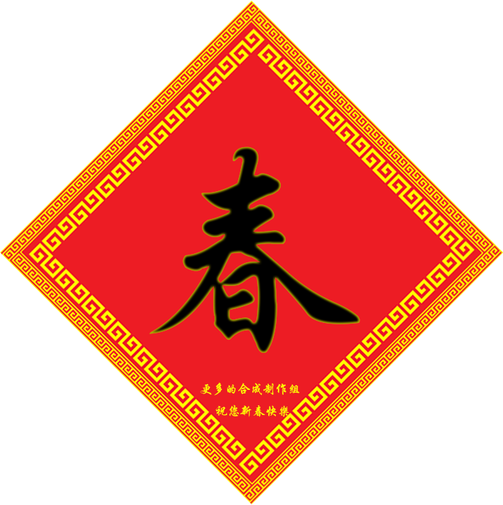
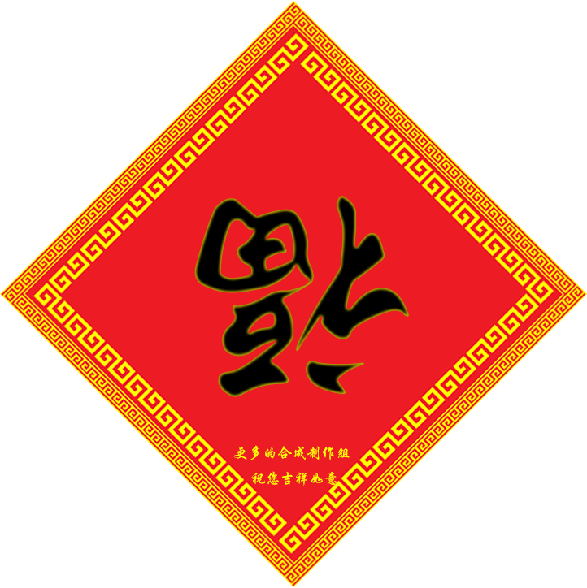
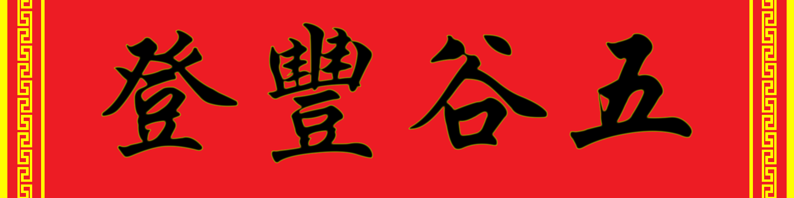
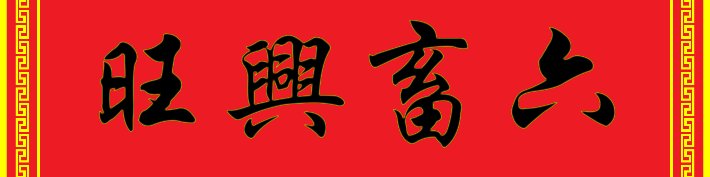

更多的合成 Crafting++
🎉欢迎来到原版模组《更多的合成》主页！原版模组一般是指使用命令而非mod api来对游戏的可玩性做出修改，自1.13起，原版模组一般以数据包的形式出现。《更多的合成》是国内论坛最大的原版模组，包括数百种物品，以及新的村民交易和空岛系统。模组的特点是：
少些固定科技线路，多些物品获取方式 少些固定手册参数，多些研究探索项目 少些繁复有用机器，多些简单无用装饰
主要内容有
- 元素——包括天、地、山、土、水、火、命七种元素、七类生物、七种稀有掉落物、七种元素之力、七种药剂。这些稀有掉落物也用于机器、工具的合成和仪式等。
- 经验——大幅提高了经验的用途，取出经验后使用附魔之瓶可以制作出模组合成器、附魔矿物、各种工具、机器、魔杖等，机器和仪式也需要经验。
- 机器——集磨粉炼矿增殖反应晒盐造石造冰于一体的9状态多功能一体机；用于获取绿宝石和附魔之瓶的交易机；代替人力处理物品的物品处理机；召唤生物的生物投影机；提供正负面效果的信标增强机；更便捷强大的附魔处理的金砧等。
- 傀儡——科技线的终端，全自动种田伐木钓鱼杀怪畜牧的傀儡。
- 研究——需要玩家测定的矿物熔炼配比参数，需要玩家测定的附魔书仪式物品对应，和21种需要杂交获取的植物，满足你的研究欲望。
- 食物装饰——500多种植物、食物、头颅、头饰、服饰、新春装饰、经典画作、纸片人、称号，装点自己也装点自己的家。
如有任何意见建议，欢迎在QQ群 642167529(入群答案纸片人)反馈、在论坛回复或私信我、发起issue、发起issue，请在反馈时提供游戏版本和模组版本。
📦 下载与安装
下载地址：MOD下载 - [CPP]更多的合成 (Crafting++) - MC百科|最大的Minecraft中文MOD百科
下载后的文件需要复制两份分别作为数据包和资源包来安装。
- 安装数据包：
- 如果是新的世界，在生成世界时可以在世界预设中点击
数据包，将下载好的文件拖拽进打开的界面，并选择至右侧以启用。从更多的合成1.15版本起，在此阶段可以选择用于空岛的超平坦预设。 - 如果是旧的世界，选中世界并点击
编辑->打开世界文件夹->打开datapacks文件夹，将数据包放入，然后重新进入世界。
- 如果是新的世界，在生成世界时可以在世界预设中点击
- 安装资源包：
- 在主页面点击
选项->资源包，将下载好的文件拖拽进打开的界面，选择至右侧以启用。 - 也可以在主页面点击
选项->资源包->打开资源包文件夹，将下载好的文件放入文件夹内，然后在资源包页面将其选择至右侧以启用。
- 在主页面点击
注意跨版本有可能导致物品或维度失效等问题，请做好备份。
模组支持英文、简体中文、繁体中文、梗体中文。本页面仅包含最新版内容，想要查看旧版本内容，请前往本模组wiki相关物品页面的历史来查看。
📄 常见问题
问：进游戏里面是乱码怎么办？
答：你没装资源包。
问：怎么下界没有下界要塞？
答：你关了生成建筑。空岛模式下不要关闭生成建筑。
问：创造模式没有找到新物品和方块？
答：数据包就是这样的，用 loot 命令来获取。
问：怎么合成不了？
答：大部分合成需使用合成器，本页面中所有绿色背景的合成表均为使用合成器的合成配方。
问：怎么获得附魔之瓶？
答：模组需要的附魔之瓶可通过副手持有漏斗获取。
问：永久缓慢/虚弱的buff怎么办？
答：吃点肉类/素菜食物，请查看营养均衡。
问：空岛模式怎么玩？
答：建议玩家使用自定义超平坦如 minecraft:air;minecraft:mountains; 进入。更多内容点击空岛模式。
问：空岛如何获得甘蔗？
答：和流浪商人交易或者使用紫色命之力转换。
问：空岛如何获取草方块？
答：进入花世界获取或者使用白色电之力转换。
问：空岛泥土怎么弄？
答：见发酵桶。
问：我可以将这个模组在我的服务器上使用吗？
答：可以，如果你的服务器有盈利能力的话，建议在爱发电根据自身盈利能力对作者进行赞助。
问：那么怎么在服务器上使用呢？
答：服务端的操作与单机类似，请设置服务器资源包下载地址，客户端无需安装数据包。本模组所有内容仅在单机纯净端测试通过，理论上支持多人。但是对于非纯净端，例如Spigot/Sponge或使用了Forge/Optifine/光影等，未必支持。
问：每次进服务器加载资源包都很慢，有解决办法吗？
答：让玩家自行下载到本地后选择好之后再进服务器即可，同时禁用服务器资源包。
问：我一加载资源包就崩溃，怎么办？
答：先尝试解压资源包后再加载。如果仍然崩溃，请调大内存。
问：我可以将模组转发给其他人或其它网站吗？
答：你不可以将模组文件转发到其它网站或网盘或文件存储平台等，但可以通过通讯类工具分享。
问：我可以使用你的部分代码吗？
答：使用模组代码需遵守GNU GENERAL PUBLIC LICENSE v3.0协议。
问：我可以将这个模组整合进整合包吗？
答：可以，同上一个问题。对于原版模组整合者，你可能需要如下信息：命名空间cpp，记分板和标签使用前缀cpp，物品自定义模型数值位于12970000-12979999，该模组还修改了minecraft命名空间大部分的战利品表和少量配方与标签。
问：我是主播或视频制作者，我可以使用这个模组直播或制作视频吗？
答：可以，请在简介中注明作者名或模组来源(本页面或MCBBS链接或MCMOD链接)。
📄 管理员指令
原版模组物品的命名空间ID用于loot指令给予玩家物品，格式为/loot give @s loot [命名空间ID]，例如/loot give @s loot cpp:all_in_one_machine可获得多功能一体机。
本原版模组矿物辞典格式类似dict:["iron_dust"]，如果其它原版模组或插件使用了相同的矿物辞典，则其相应物品和本模组相应物品通用。
通过/scoreboard players set 名称 cppConfig 数值可以修改模组的参数。
| 名称 | 取值 | 默认值 | 描述 |
|---|---|---|---|
$doZombieImproving | 0或1 | 1 | 是否加强僵尸、僵尸村民和尸壳 |
$doSkeletonImproving | 0或1 | 1 | 是否加强骷髅和流浪者 |
$doWitderSkeletonImproving | 0或1 | 1 | 是否加强凋灵骷髅 |
$doCreeperImproving | 0或1 | 1 | 是否加强爬行者 |
$doDarkAnimalSpawning | 0或1 | 1 | 是否生成异变动物 |
$forestBatWords | 0或1 | 1 | 是否开启蝙蝠骚话 |
$modTreeAgeMax | 至少为1 | 2 | 模组树生长阶段数 |
$modLeavestdreshold | 至少为1 | 3600 | 模组树树叶转化基数 |
$allInOneMachinePeriod | 至少为1 | 1200 | 多功能一体机工作周期 |
$mobProjectorPeriod | 至少为1 | 2400 | 生物投影仪工作周期 |
$ritualsTime | 至少为10 | 1200 | 仪式耗时 |
$golemMoveMax | 至少为1 | 80 | 傀儡最多可不接触控制方块移动多少格 |
$maxChainBlocks | 至少为1 | 1024 | 连锁一次最多挖掘方块数 |
$deatdHungerPunish | 0或1 | 1 | 死亡后是否有饥饿惩罚 |
$disableMachineBreed | 0或1 | 0 | 是否禁用多功能一体机繁殖农作物 |
$disableGrassGenerate | 0或1 | 0 | 是否禁用花草自然生成 |
$fatPunish | 0或1 | 1 | 是否在体重不佳时惩罚玩家，关闭会导致无法制作西北风 |
$skyislandDistance | 至少为1 | 1000 | 空岛玩家间距 |
$skyislandMode | 0或1 | 若主世界底部为基岩则为1，否则为0 | 是否开启空岛模式 |
👷 制作者名单
数据包设计：ruhuasiyu
资源包设计：ruhuasiyu RubberTree XeKr 折君
平台支持：Minecraft(我的世界)中文论坛 MC百科
赞助名单：月下贱影 一米八微笑 明月庄主 SPGoding Rhythm萱 唯一丶为伊 8Index LIXIAOGANG 陌余Oucher uuu2011 爱发电用户_AU9c 甘小蔗 空白 SekawaRyo 火星浮云 Longhorn Build 4074 这是彩虹糖呢 古镇天 支持国产mod 倪采臣 zzzz 大吃货 折君 Hao_Tian22 Appleeeee 爱发电用户_JCmn 落天望月 爱发电用户_4eyN switefaster 猫君 chyx TUCAOEVER
设计过程中亦参考了热力膨胀、植物魔法、深渊国度、潘马斯农场、无中生有，等价交换、盐等模组以及Bilibili与Youtube一些视频，CBL、TCP、CBV、MAG等小组以及天狼星black、MC先生、pineapple_、贰逼、ECS、pca、玄素、乙烯_中国、⊙v⊙、HerobrineXia、白天、苹果果、SorrowRain、Amber、匠魂、Gingerbread、森林蝙蝠、mcer、Stark、yap、Lakejason、Ph-苯、Cjsah、Ethaxiuman、Lemon、quarks、EterLzb、BCMonomial等玩家亦对此模组有贡献。
感谢以上所有玩家，特别感谢对我们给予赞助的玩家！
自然生成
花世界和繁花
维度命令：/execute in cpp:flower run tp @s ~ 255 ~
生物群系命令：/locatebiome cpp:flower
花世界为仅包含繁花一种生物群系的维度。花世界可以生成红树、繁茂洞穴、溶洞、紫晶洞、蓄水层、噪声洞穴和深板岩层以及
| 结构名称 | 结构 | 空位 | 间隔 | 盐 |
|---|---|---|---|---|
| 附魔室 | cpp:enchanting_room | 35 | 15 | 114521 |
| 图腾柱 | cpp:totem_pillar | 35 | 15 | 114520 |
| 水果树 | cpp:fruit_tree | 25 | 9 | 114526 |
| 矿石树 | cpp:ore_tree | 25 | 9 | 114527 |
| 羊毛树 | cpp:wool_tree | 25 | 9 | 114528 |
| 樱桃树 | cpp:sakura_tree | 25 | 9 | 114529 |
| 蔬菜作物田 | cpp:crops | 20 | 10 | 114515 |
| 水果作物田 | cpp:fruit_crops | 20 | 10 | 114516 |
| 野花草 | cpp:wild_grass | 6 | 3 | 114514 |
花世界可以生成牛、羊、鸡、猪、兔子、鳕鱼、鲑鱼、河豚、热带鱼、海豚、鱿鱼、发光鱿鱼和美西螈，除了海底废墟自带的溺尸以及附魔室自带的幻术师外不会生成怪物和异变动物，时间固定为正午。
在主世界/花世界中将大型花摆放成正八边形，然后在中间放置白色羊毛即可激活至花世界/主世界的传送门。注意传送门是单向的，因此首次进入花世界时需要携带白色羊毛。

附魔室
定位结构命令：/locate cpp:enchanting_room
附魔室在繁花生物群系地表自然生成。
附魔室包含了有一根下界砖块柱子支撑的小屋，小屋中间为一个附魔台，周围环绕着12个空书架，并且其中会生成一名幻术师。小屋的四个角为由荧石和黑曜石构成的柱子。
每个空书架的内含物都从1-3个物品池中随机抓取，每个物品池分布情况如下：
| 物品 | 堆叠数 | 权重 | 备注 | |
|---|---|---|---|---|
| 书 | 1-3 | 25/100 | ||
| 纸 | 2-7 | 25/100 | ||
| 附魔书 | 1 | 11/100 | 等级为30-40级 | |
| 空地图 | 1 | 10/100 | ||
| 指南针 | 1 | 10/100 | ||
| 幽匿催发体 | 1 | 10/100 | ||
| 上古卷轴 | 1 | 9/100 | 为9种中随机的一种 | |
图腾柱
定位结构命令：/locate cpp:totem_pillar
图腾柱在繁花生物群系地表自然生成，并延伸至地下。
图腾柱由石砖、裂石砖和苔石砖包裹而成。图腾柱中心的方块分布相对地面的高度是固定的。从地面往上的相对高度，熔岩出现在高度为4的倍数处，其余2的倍数高度从下往上依次为铁矿石、红石矿石、青金石矿石、煤矿石、宝箱、金矿石、钻石矿石、绿宝石矿石、月石、远古残骸、下界石英矿石、铜矿石，一共重复7次。
图腾柱的探索主要危险是摔落，因此拥有扫帚会方便很多。由于其中包含熔岩，因此要注意熔岩的伤害。
每个图腾柱含有7个宝箱，每个宝箱内含物都从15个物品池中随机抓取，分布情况如下：
| 物品 | 堆叠数 | 权重 | 品质 | |
|---|---|---|---|---|
| 泥土之魂 | 1 | 1/100 | 2 | |
| 火焰之星 | 1 | 1/100 | 2 | |
| 山脉之肢 | 1 | 1/100 | 2 | |
| 附魔金苹果 | 1 | 3/100 | 1 | |
| 附魔铁锭 | 1 | 7/100 | 1 | |
| 附魔金锭 | 1 | 7/100 | 1 | |
| 肉松面包 | 1-5 | 10/100 | 0 | |
| 拔丝苹果 | 1-5 | 10/100 | 0 | |
| 煤炭 | 1-5 | 12/100 | -1 | |
| 骨头 | 1-6 | 12/100 | -2 | |
| 火药 | 1-6 | 12/100 | -2 | |
| 腐肉 | 1-6 | 12/100 | -2 | |
| 线 | 1-6 | 12/100 | -2 | |
树
这些树在繁花生物群系地表土质方块上自然生成，它们的形状与普通桦树相同。
树苗可以放入花盆。树苗种下后可用骨粉催熟，树苗一共两个生长阶段。每个树叶都对应一个实体，大面积种植可能会卡顿。
每种树叶会和普通树叶一样掉落相应树苗和木棍，受剪刀、剪枝器和附魔影响。
水果树长大时会确定将要长出的水果，此后水果树树叶下方是空气时会逐渐消失并掉落水果，速度受随机刻影响，每个树叶平均需要60秒。手动放置的树叶不会转化。水果的种类和生物群系的温度有关，其判定和生成青蛙的种类的判定一致。
矿石树树叶会逐渐转化为矿石，速度受随机刻影响，每个树叶平均需要60秒。手动放置的树叶不会转化。矿石种类如下表所示。如果标签 #forge:ores 非空，则有一半几率生成该标签对应方块。
羊毛树树叶有5%几率掉落彩色羊毛、鳕鱼和鲑鱼之一，有0.5%几率掉落彩色Jeb羊。
樱花树树叶有10%几率额外掉落樱桃。
使用命令/scoreboard players set $modTreeAgeMax cppConfig 2来修改树的生长阶段数，默认为2。
使用命令/scoreboard players set $modLeavesThreshold cppConfig 3600来修改树叶的转化速度，数值越小速度越快，默认为3600。

蔬菜作物田
定位结构命令：/locate cpp:crops
蔬菜作物田在繁花生物群系地表自然生成，为小麦、马铃薯、胡萝卜和甜菜根作物形成的一小块田，包含一个由橡木活板门、橡木栅栏、南瓜灯和干草块构成的稻草人。
水果作物田
定位结构命令：/locate cpp:fruit_crops
蔬菜作物田在繁花生物群系地表自然生成，为草莓、番茄、蓝莓和菠萝形成的一小块田，包含一个由橡木活板门、橡木栅栏、南瓜灯和干草块构成的稻草人。
野花草
定位结构命令：/locate cpp:wild_grass
蔬菜作物田在繁花生物群系地表土质方块上自然生成，由若干单一的成熟花草或野花构成，可以使用指花针来定位。
使用命令/scoreboard players set $disableGrassGenerate cppConfig 0或1来启动/禁用花草自然生成，这样花草就只能通过杂交获取了。

实体和掉落
怪物加强
僵尸和骷髅及其变种将有更高的几率生成时身穿盔甲、手持武器或能够射出药箭。武器和盔甲有20%几率会有额外属性，效果等同属性附加仪式。
僵尸能破坏遇到的火把、灯笼、末地烛和海泡菜，让你的光照防御变得脆弱无比。
苦力怕爆炸前的引线时间变得更短，有几率变异为高压苦力怕，想要近身搏斗几无可能。
使用命令/scoreboard players set $doZombieImproving cppConfig 0或1来关闭/开启增强僵尸、僵尸村民和尸壳功能。
使用命令/scoreboard players set $doSkeletonImproving cppConfig 0或1来关闭/开启增强骷髅和流浪者功能。
使用命令/scoreboard players set $doWitherSkeletonImproving cppConfig 0或1来关闭/开启增强凋灵骷髅功能。
使用命令/scoreboard players set $doCreeperImproving cppConfig 0或1来关闭/开启增强爬行者功能。
黑暗碎片
物品命令：/loot give @s loot cpp:shard_of_the_darkness
部分动物因接触黑暗力量的大脑发生了异变，其头部会持续发出黑色颗粒效果，并会靠近和攻击玩家。异变动物被玩家杀死后掉落 黑暗碎片。
使用命令/scoreboard players set $doDarkAnimalSpawning cppConfig 0或1来关闭/开启生成异变生物功能，注意关闭会导致无法使用黑暗召唤仪式来修复破损刷怪笼。
| 生物类别 | 攻击方式 | 额外掉落 |
|---|---|---|
| 异变牛 | 凋零、饥饿 | 腐肉 |
| 异变哞菇 | 凋零、饥饿 | 腐肉 |
| 异变羊/山羊 | 凋零、缓慢 | 骨头 |
| 异变猪 | 靠近后爆炸 | 火药 |
| 异变鸡 | 凋零、中毒 | 线 |
| 杀手兔 | 直接伤害 | 骨头 |
生物掉落
鸡死亡时若着火不再掉落羽毛。死亡后额外掉落0~1+0.5×抢夺等级个 鸡蛋。
僵尸、尸壳、僵尸村民不会因着火而掉落烤马铃薯，并有几率掉落 草莓、 番茄、 蓝莓或 菠萝。
钓鱼
有几率钓到宝藏 珊瑚、 珊瑚扇、 湿海绵、 水晶之心。
有几率钓到垃圾 火药、 海晶碎片、 海泡菜、 莲子、 白睡莲。
在主世界和花世界有几率钓到宝藏 鳕鱼头、 鲑鱼头、 热带鱼头、河豚头。
玩家
使用命令/scoreboard players set $deathHungerPunish cppConfig 0或1来关闭/开启死亡饥饿惩罚。
破损的刷怪笼
物品命令：/loot give @s loot cpp:broken_spawner
使用精准采集附魔的镐子破坏刷怪笼得到 破损的刷怪笼，在黑暗召唤仪式中可以修复为普通 刷怪笼。
龙蛋
末影龙死亡后，会在传送门上方生成 龙蛋，不要求是第一次击杀。
村民和流浪商人
村民和流浪商人会被手持 绿宝石块的玩家吸引，被玩家杀死时掉落3点 经验值。死亡时掉落1~(2+抢夺等级) 绿宝石。
交易
为流浪商人增加了8种头饰，6项28种交易。
| 想要的物品 | 交换的物品 | 失效前可交易次数 | |||
|---|---|---|---|---|---|
| 第1项 | 36-40 橡木 | 绿宝石 | 12 | ||
| 36-40 云杉木 | 绿宝石 | 12 | |||
| 36-40 白桦木 | 绿宝石 | 12 | |||
| 36-40 丛林木 | 绿宝石 | 12 | |||
| 36-40 金合欢木 | 绿宝石 | 12 | |||
| 36-40 深色橡木 | 绿宝石 | 12 | |||
| 第2项 | 36-40 骨粉 | 绿宝石 | 12 | ||
| 36-40 火药 | 绿宝石 | 12 | |||
| 36-40 烈焰粉 | 绿宝石 | 12 | |||
| 36-40 黏液球 | 绿宝石 | 12 | |||
| 36-40 箭 | 绿宝石 | 12 | |||
| 36-40 海晶砂粒 | 绿宝石 | 12 | |||
| 第3项 | 15-19 紫颂果 | 绿宝石 | 12 | ||
| 16-20 红石 | 绿宝石 | 12 | |||
| 14-16 末影珍珠 | 绿宝石 | 12 | |||
| 8-12 蜘蛛眼 | 绿宝石 | 12 | |||
| 倒数第3项 | 1-3 绿宝石 | 活塞 | 12 | ||
| 1-3 绿宝石 | 红石灯 | 12 | |||
| 1-3 绿宝石 | TNT | 12 | |||
| 1-3 绿宝石 | 侦测器 | 12 | |||
| 倒数第2项 | 绿宝石 | 4-6 烟花火箭(双层球状，颜色随机) | 6 | ||
| 3 绿宝石 | 鲑鱼桶 | 6 | |||
| 4-6 绿宝石 | 随机药水 | 6 | |||
| 4-6 绿宝石 | 随机喷溅药水 | 6 | |||
| 倒数第1项 | 月之碎片 | 潜影箱 | 3 | ||
| 月之碎片 | 随机结构地图(需要在相应世界存在) | 3 | |||
| 月之碎片 | 纸片人 | 3 | |||
| 月之碎片 | 圣诞礼物 | 3 | |||
掉落物
机器和插件
任何尝试放入机器非物品栏的物品会被返回到最近的玩家背包内，机器的按钮按左键或Q键切换。
机器输出栏内若有物品，机器会停止工作直到物品被取走。若机器的GUI中拥有可选择输出方向的按钮，则相应方位有容器且容器有空栏位时，会将机器输出栏内的物品转移到容器中。这样的机器以及生物投影机、信标增强机在被原版红石元件强充能时会停止工作。
若机器右侧拥有经验条，则在右上方可以放入附魔之瓶来输入经验。也可以放入无线插件来将32米内玩家的经验值直接输出到机器内。机器最多存储1000点经验。右下方可以取出所有经验。
合成器
物品命令：/loot give @s loot cpp:crafting_machine
| 材料 | 合成配方 |
|---|---|
| 附魔之瓶+工作台 |
将物品放入合成器界面左侧九宫格输入栏即可自动合成出产物。配方支持左右翻转和平移，瓶装和桶装物品合成后会返还玻璃瓶或桶，除非产物也是瓶装或桶装物品。
多功能一体机
物品命令：/loot give @s loot cpp:all_in_one_machine
| 材料 | 合成配方 |
|---|---|
| 附魔铁锭+附魔金锭+熔炉+木桶+泥土之魂 |

将物品放入多功能一体机界面上侧两个栏位，并在左侧按钮选择合适的压力和温度，经过一定的时间之后会消耗经验值在下方两个栏位产出物品。输入的两种材料顺序可以交换。工作时，中间的进度条会显示进度，同时机器的外观也会变为动态。
默认情形多功能一体机只能使用常压常温模式，玩家需要使用插件Shift右键机器来解锁相应模式，包括：低温插件、低压插件、高温插件和高压插件。
多功能一体机配方中矿石变种可以代替原矿石，例如铁矿石(深板岩铁矿石)/金矿石(下界金矿石、深板岩金矿石)/红石矿石(深板岩红石矿石)/青金石矿石(深板岩青金石矿石)/钻石矿石(深板岩钻石矿石)。
高温高压
可以将两种不同的矿石混合烧炼并提高产出，不同的搭配拥有不同的倍率，倍率在模组首次加载时被确定，需要玩家测量参数以确定最佳组合。倍率为1.0~4.0倍，其中铜矿的基准数量为2.5，红石的基准数量为5，青金石的基准数量为6。支持煤矿石/铁矿石/金矿石/红石矿石/青金石矿石/绿宝石矿石/钻石矿石/下界石英矿石/铜矿石。
| 输入 | 输出 | 经验 | 耗时 |
|---|---|---|---|
| 任意两种不同类型的矿石 | 1.0~4.0倍对应矿物 | 4 | 10 |
高温常压
| 输入 | 输出 | 经验 | 耗时 | ||
|---|---|---|---|---|---|
| 铜粉+沙子/红沙 | 铜锭+20% 煤渣 | 1 | 2.5 | ||
| 铁粉+沙子/红沙 | 铁锭+20% 煤渣 | 1 | 2.5 | ||
| 金粉+沙子/红沙 | 金锭+20% 煤渣 | 1 | 2.5 | ||
| 碳粉+沙子/红沙 | 煤炭+20% 煤渣 | 1 | 2.5 | ||
| 钻石粉+沙子/红沙 | 钻石+20% 煤渣 | 1 | 2.5 | ||
| 绿宝石粉+沙子/红沙 | 绿宝石+20% 煤渣 | 1 | 2.5 | ||
| 石英粉+沙子/红沙 | 下界石英+20% 煤渣 | 1 | 2.5 | ||
| 硅粉+沙子/红沙 | 硅板+20% 煤渣 | 4 | 10 | ||
| 稀土粉+沙子/红沙 | 稀土玻璃+20% 煤渣 | 4 | 10 | ||
| 钢粉+沙子/红沙 | 钢化玻璃+20% 煤渣 | 4 | 10 | ||
| 玻璃瓶+沙子/红沙 | 盐瓶 | 4 | 10 | ||
高温低压
| 输入 | 输出 | 经验 | 耗时 | ||
|---|---|---|---|---|---|
| 酸水+下界疣 | 生物酸 | 4 | 10 | ||
| 碱水+下界疣 | 生物碱 | 4 | 10 | ||
| 石英粉+燧石 | 粗硅 | 4 | 10 | ||
| 玻璃瓶+活塞 | 空气瓶 | 4 | 10 | ||
| 粗硅+空气瓶 | 硅粉+玻璃瓶 | 4 | 10 | ||
| 黏土球+盐瓶 | 稀土盐+玻璃瓶 | 4 | 10 | ||
| 稀土盐+生物碱 | 碱性稀土+玻璃瓶 | 4 | 10 | ||
| 碱性稀土+生物酸 | 稀土粉+玻璃瓶 | 4 | 10 | ||
| 生物碱+肥料 | 氨制冷剂+煤渣 | 4 | 10 | ||
| 黏液球+泥土 | 黏土块 | 4 | 10 | ||
常温高压
| 输入 | 输出 | 经验 | 耗时 | ||
|---|---|---|---|---|---|
| 远古残骸+燧石 | 2 下界合金碎片 | 4 | 10 | ||
| 铜矿石+燧石 | 2 铜粉+10% 铁粉 | 4 | 10 | ||
| 铁矿石+燧石 | 2 铁粉+10% 金粉 | 4 | 10 | ||
| 金矿石+燧石 | 2 金粉+10% 铁粉 | 4 | 10 | ||
| 煤矿石+燧石 | 2 碳粉+2% 钻石粉 | 4 | 10 | ||
| 绿宝石矿石+燧石 | 2 绿宝石粉+10% 钻石粉 | 4 | 10 | ||
| 钻石矿石+燧石 | 2 钻石粉+10% 碳粉 | 4 | 10 | ||
| 下界石英矿石+燧石 | 2 石英粉+10% 荧石粉 | 4 | 10 | ||
| 红石矿石+燧石 | 红石块+2 青金石 | 4 | 10 | ||
| 青金石矿石+燧石 | 2 青金石块+2 红石粉 | 4 | 10 | ||
| 粗铜/铜锭+燧石 | 铜粉 | 1 | 2.5 | ||
| 粗铁/铁锭+燧石 | 铁粉 | 1 | 2.5 | ||
| 粗金/金锭+燧石 | 金粉 | 1 | 2.5 | ||
| 煤炭/木炭+燧石 | 碳粉 | 1 | 2.5 | ||
| 绿宝石+燧石 | 绿宝石粉 | 1 | 2.5 | ||
| 钻石+燧石 | 钻石粉 | 1 | 2.5 | ||
| 下界石英+燧石 | 石英粉 | 1 | 2.5 | ||
| 黏土块+燧石 | 黏液球 | 1 | 2.5 | ||
| 圆石+燧石 | 沙子+燧石 | 1 | 1 | ||
| 石头+燧石 | 沙砾+燧石 | 1 | 1 | ||
| 海晶碎片+燧石 | 海晶砂粒+燧石 | 1 | 1 | ||
常温常压
使用命令/scoreboard players set $disableMachineBreed cppConfig 0或1来启动/禁用多功能一体机繁殖农作物。
| 输入 | 输出 | 经验 | 耗时 | ||
|---|---|---|---|---|---|
| 花草种子+肥料 | 对应花草 | 2 | 2 | ||
| 南瓜种子/西瓜种子+肥料 | 2 南瓜/西瓜 | 2 | 2 | ||
| 草莓/西红柿/蓝莓/菠萝/大豆+肥料 | 3 对应水果 | 2 | 2 | ||
| 稻谷/甘蔗/可可豆/仙人掌/垂泪藤/ 缠怨藤/下界疣/蘑菇/草/蕨/海草/ 睡莲/大型垂滴叶/花/藤蔓/白睡莲/ 莲花/发光地衣/发光浆果/野花+肥料 |
4 对应植物 | 2 | 2 | ||
| 莲子+肥料 | 莲藕+莲花 | 2 | 2 | ||
| 胡萝卜/马铃薯+肥料 | 6 对应植物 | 2 | 2 | ||
| 竹子/甜浆果/海带+肥料 | 8 对应植物 | 2 | 2 | ||
| 珊瑚块+肥料 | 珊瑚块+2 珊瑚/珊瑚扇 | 2 | 2 | ||
| 小麦种子+肥料 | 2 小麦+2 小麦种子 | 2 | 2 | ||
| 甜菜种子+肥料 | 2 甜菜根+2 甜菜种子 | 2 | 2 | ||
| 紫颂花+肥料 | 2 紫颂果+2 紫颂花 | 2 | 2 | ||
| 水果树树苗+肥料 | 2 随机水果+2 水果树树苗 | 2 | 2 | ||
| 矿石树树苗+肥料 | 2 随机矿石+2 矿石树树苗 | 2 | 2 | ||
| 羊毛树树苗+肥料 | 2 随机羊毛+2 羊毛树树苗 | 2 | 2 | ||
| 樱花树树苗+肥料 | 2 樱桃+2 樱花树树苗 | 2 | 2 | ||
| 树苗+肥料 | 4 对应原木+2 对应树苗 | 2 | 2 | ||
| 绯红菌/诡异菌+肥料 | 4 对应疣块+4 对应菌柄或菌光体 | 2 | 2 | ||
常温低压
| 输入 | 输出 | 经验 | 耗时 | ||
|---|---|---|---|---|---|
| 幻翼膜+粗制的药水 | 轻盈药剂 缓降(4:00) | 4 | 10 | ||
| 金胡萝卜+粗制的药水 | 明目药剂 夜视(8:00) | 4 | 10 | ||
| 岩浆膏+粗制的药水 | 炎盾药剂 防火(8:00) | 4 | 10 | ||
| 河豚+粗制的药水 | 避水药剂 水下呼吸(8:00) | 4 | 10 | ||
| 末影珍珠+粗制的药水 | 透明药剂 隐身(8:00) | 4 | 10 | ||
| 兔子脚+粗制的药水 | 弹力药剂 跳跃提升 II(4:00) | 4 | 10 | ||
| 糖+粗制的药水 | 敏捷药剂 速度 II(4:00) | 4 | 10 | ||
| 烈焰粉+粗制的药水 | 锋锐药剂 力量 II(4:00) | 4 | 10 | ||
| 恶魂之泪+粗制的药水 | 回春药剂 生命恢复 II(2:00) | 4 | 10 | ||
| 闪烁的西瓜+粗制的药水 | 血涌药剂 瞬间治疗 III | 4 | 10 | ||
| 附魔金锭+粗制的药水 | 极限药剂 急迫 II(4:00) | 4 | 10 | ||
| 附魔钻石+粗制的药水 | 护盾药剂 抗性提升 II(4:00) | 4 | 10 | ||
| 鹦鹉螺壳+粗制的药水 | 潮汐药剂 潮涌能量(4:00) | 4 | 10 | ||
| 附魔铁锭+粗制的药水 | 连环药剂 连锁(8:00) | 4 | 10 | ||
| 回响碎片+粗制的药水 | 幽匿药剂 隐匿(4:00) | 4 | 10 | ||
| 天空之翼+粗制的药水 | 天空药剂 速度 II(6:00) 缓降(6:00) | 4 | 10 | ||
| 水晶之心+粗制的药水 | 海洋药剂 水下呼吸(12:00) 潮涌能量(6:00) | 4 | 10 | ||
| 山脉之肢+粗制的药水 | 山脉药剂 力量 II(6:00) 夜视(12:00) | 4 | 10 | ||
| 泥土之魂+粗制的药水 | 泥土药剂 隐身(12:00) 连锁(12:00) | 4 | 10 | ||
| 大地之证+粗制的药水 | 大地药剂 跳跃提升 II(6:00) 急迫 II(6:00) | 4 | 10 | ||
| 火焰之星+粗制的药水 | 火焰药剂 防火(12:00) 抗性提升 II(6:00) | 4 | 10 | ||
| 生命之灵+粗制的药水 | 生命药剂 生命恢复 II(3:00) 瞬间治疗 IV | 4 | 10 | ||
| 氨制冷剂+鸡蛋 | 疫苗 免疫 中毒(3:00:00) | 8 | 60 | ||
| 生物碱+鸡蛋 | 疫苗 免疫 失明(3:00:00) | 8 | 60 | ||
| 生物酸+鸡蛋 | 疫苗 免疫 挖掘疲劳(3:00:00) | 8 | 60 | ||
| 盐瓶+鸡蛋 | 疫苗 免疫 凋零(3:00:00) | 8 | 60 | ||
| 黑暗碎片+鸡蛋 | 疫苗 免疫 黑暗(3:00:00) | 8 | 60 | ||
| 空气瓶+鸡蛋 | 疫苗 免疫 异变(10:00:00) | 8 | 60 | ||
低温高压
| 输入 | 输出 | 经验 | 耗时 | ||
|---|---|---|---|---|---|
| 蜂蜜瓶+水果/苹果/西瓜片 | 冷饮 | 2 | 5 | ||
| 水瓶+氨制冷剂 | 冰+氨制冷剂 | 1 | 1 | ||
| 绿色水之力(不消耗)+氨制冷剂 | 冰+氨制冷剂 | 1 | 1 | ||
低温常压
插件和熔岩桶不消耗。
| 输入 | 输出 | 经验 | 耗时 | ||
|---|---|---|---|---|---|
| 熔岩桶+圆石插件 | 4 圆石 | 1 | 1 | ||
| 熔岩桶+石头插件 | 4 石头 | 1 | 1 | ||
| 熔岩桶+深板岩插件 | 4 深板岩 | 1 | 1 | ||
| 熔岩桶+黑石插件 | 4 黑石 | 1 | 1 | ||
| 熔岩桶+下界岩插件 | 4 下界岩 | 1 | 1 | ||
| 熔岩桶+末地石插件 | 末地石 | 1 | 1 | ||
| 熔岩桶+玄武岩插件 | 3 玄武岩 | 1 | 1 | ||
低温低压
| 输入 | 输出 | 经验 | 耗时 | ||
|---|---|---|---|---|---|
| 水瓶+氨制冷剂 | 雪块+氨制冷剂 | 1 | 1 | ||
| 绿色水之力(不消耗)+氨制冷剂 | 雪块+氨制冷剂 | 1 | 1 | ||
| 水桶+氨制冷剂 | 细雪桶+氨制冷剂 | 1 | 1 | ||
使用命令/scoreboard players set $allInOneMachinePeriod cppConfig 1200来修改机器速度，数值越小速度越快，默认为1200。
交易机
物品命令：/loot give @s loot cpp:trade_machine
| 材料 | 合成配方 |
|---|---|
| 附魔铁锭+傀儡+木桶+绿宝石+大地之证 |
交易机拥有两种模式，点击上方按钮切换。每次工作完成后需要一段时间的冷却才再次工作。
第一种模式可将左侧栏位物品转化为价值点，价值点达到2048时会产出一个绿宝石和7点经验。每产出10个绿宝石，会产出一个交易插件。
第二种模式在右侧两个栏位放入交易插件和绿宝石/金锭/月之碎片，然后根据交易插件记录的内容产生相应物品并消耗材料。该操作会消耗经验值，交易插件不会被消耗。
| 输入 | 输出 | 消耗经验 | 冷却时间(秒) | ||
|---|---|---|---|---|---|
| 交易插件+绿宝石 | 16 箭 | 1 | 2 | ||
| 交易插件+绿宝石 | 12 曲奇 | 1 | 2 | ||
| 交易插件+绿宝石 | 10 红砖 | 1 | 2 | ||
| 交易插件+绿宝石 | 8 沙子 | 1 | 2 | ||
| 交易插件+绿宝石 | 8 熟鸡肉 | 1 | 2 | ||
| 交易插件+绿宝石 | 6 面包 | 1 | 2 | ||
| 交易插件+绿宝石 | 5 熟猪排 | 1 | 2 | ||
| 交易插件+绿宝石 | 4 随机染料 | 1 | 2 | ||
| 交易插件+绿宝石 | 4 玻璃 | 1 | 2 | ||
| 交易插件+绿宝石 | 4 苹果 | 1 | 2 | ||
| 交易插件+绿宝石 | 4 南瓜派 | 1 | 2 | ||
| 交易插件+绿宝石 | 4 红沙 | 1 | 2 | ||
| 交易插件+绿宝石 | 4 滴水石块 | 1 | 2 | ||
| 交易插件+绿宝石 | 2 滴水石锥 | 1 | 2 | ||
| 交易插件+绿宝石 | 2 缠根泥土 | 1 | 2 | ||
| 交易插件+绿宝石 | 2 苔藓块 | 1 | 2 | ||
| 交易插件+绿宝石 | 2 红石粉 | 1 | 2 | ||
| 交易插件+绿宝石 | 2 随机药箭 | 1 | 2 | ||
| 交易插件+绿宝石 | 蛋糕 | 1 | 2 | ||
| 交易插件+绿宝石 | 迷之炖菜 饱和 (00:07) 迷之炖菜 失明 (00:06) 迷之炖菜 跳跃提升 (00:08) 迷之炖菜 虚弱 (00:07) 迷之炖菜 夜视 (00:05) 迷之炖菜 中毒 (00:14) |
1 | 2 | ||
| 交易插件+绿宝石 | 浮冰 | 1 | 2 | ||
| 交易插件+绿宝石 | 蓝冰 | 1 | 2 | ||
| 交易插件+绿宝石 | 青金石 | 1 | 2 | ||
| 交易插件+绿宝石 | 火药 | 1 | 2 | ||
| 交易插件+绿宝石 | 金胡萝卜 | 1 | 2 | ||
| 交易插件+绿宝石 | 闪烁的西瓜片 | 1 | 2 | ||
| 交易插件+绿宝石 | 灯笼 | 1 | 2 | ||
| 交易插件+绿宝石 | 陶瓦 | 1 | 2 | ||
| 交易插件+绿宝石 | 白色羊毛 | 1 | 2 | ||
| 交易插件+绿宝石 | 随机珊瑚块 | 1 | 2 | ||
| 交易插件+绿宝石 | 兔肉煲 | 1 | 2 | ||
| 交易插件+绿宝石 | 鳕鱼桶 | 1 | 2 | ||
| 交易插件+绿宝石 | 鲑鱼桶 | 1 | 2 | ||
| 交易插件+绿宝石 | 河豚桶 | 1 | 2 | ||
| 交易插件+绿宝石 | 热带鱼桶 | 1 | 2 | ||
| 交易插件(不消耗)+2 绿宝石 | 石英块 | 1 | 4 | ||
| 交易插件(不消耗)+2 绿宝石 | 铜块 | 1 | 4 | ||
| 交易插件(不消耗)+2 绿宝石 | 荧石 | 1 | 4 | ||
| 交易插件(不消耗)+2 绿宝石 | 鹦鹉螺壳 | 1 | 4 | ||
| 交易插件(不消耗)+5 绿宝石 | 末影珍珠 | 1 | 10 | ||
| 交易插件(不消耗)+5 绿宝石 | 黏液球 | 1 | 10 | ||
| 交易插件(不消耗)+6 绿宝石 | 鞍 | 1 | 12 | ||
| 交易插件(不消耗)+6 绿宝石 | 空地图 | 1 | 12 | ||
| 交易插件(不消耗)+6 绿宝石 | 物品展示框 | 1 | 12 | ||
| 交易插件(不消耗)+10 绿宝石 | 旗帜图案 (地球) | 1 | 20 | ||
| 交易插件(不消耗)+10 绿宝石 | 书架 | 1 | 20 | ||
| 交易插件(不消耗)+20 绿宝石 | 命名牌 | 1 | 30 | ||
| 交易插件(不消耗)+36 绿宝石 | 钟 | 1 | 30 | ||
| 交易插件(不消耗)+20 绿宝石 | 附魔钻石剑 | 1 | 30 | ||
| 交易插件(不消耗)+24 绿宝石 | 附魔钻石斧 | 1 | 30 | ||
| 交易插件(不消耗)+25 绿宝石 | 附魔钻石镐 | 1 | 30 | ||
| 交易插件(不消耗)+17 绿宝石 | 附魔钻石锹 | 1 | 30 | ||
| 交易插件(不消耗)+14 绿宝石 | 附魔钻石锄 | 1 | 30 | ||
| 交易插件(不消耗)+20 绿宝石 | 附魔钻石头盔 | 1 | 30 | ||
| 交易插件(不消耗)+28 绿宝石 | 附魔钻石胸甲 | 1 | 30 | ||
| 交易插件(不消耗)+26 绿宝石 | 附魔钻石护腿 | 1 | 30 | ||
| 交易插件(不消耗)+20 绿宝石 | 附魔钻石靴子 | 1 | 30 | ||
| 交易插件(不消耗)+12 绿宝石 | 附魔钓鱼竿 | 1 | 30 | ||
| 交易插件(不消耗)+14 绿宝石 | 附魔弓 | 1 | 30 | ||
| 交易插件(不消耗)+15 绿宝石 | 附魔弩 | 1 | 30 | ||
| 交易插件(不消耗)+12 绿宝石 | I 级附魔书 | 1 | 30 | ||
| 交易插件(不消耗)+20 绿宝石 | II 级附魔书 | 1 | 30 | ||
| 交易插件(不消耗)+26 绿宝石 | III 级附魔书 | 1 | 30 | ||
| 交易插件(不消耗)+38 绿宝石 | IV 级附魔书 | 1 | 30 | ||
| 交易插件(不消耗)+44 绿宝石 | V 级附魔书 | 1 | 30 | ||
| 交易插件(不消耗)+24 绿宝石 | 宝藏型I 级附魔书 | 1 | 30 | ||
| 交易插件(不消耗)+金锭 | 猪灵以物换物的物品 | 4 | 10 | ||
| 交易插件(不消耗)+月之碎片 | 潜影盒 | 64 | 30 | ||
| 交易插件(不消耗)+月之碎片 | 随机纸片人 | 64 | 30 | ||
| 交易插件(不消耗)+月之碎片 | 圣诞礼物 | 64 | 30 | ||
| 交易插件(不消耗)+月之碎片 | 随机结构地图(需要在相应世界存在) | 64 | 30 | ||
物品处理机
物品命令：/loot give @s loot cpp:item_processer
| 材料 | 合成配方 |
|---|---|
| 附魔铁锭+工作台+木桶+红石+熔炉 |
左上方放入工具，左侧放入材料，机器会以每刻1次的速度工作。每次工作时，工具若有耐久会消耗1点耐久并支持耐久附魔，否则不会被消耗。工具可以是原版任意材质。
对于不需要检验工具耐久的配方，可以处理压缩后的物品，且每次会尽可能地多处理物品。水桶/熔岩桶可以被合理的绿色水之力代替。
| 输入 | 输出 | 是否要求工具不含精准采集 附魔且受时运附魔影响 | ||||
|---|---|---|---|---|---|---|
| 木锹 金锹 石锹 铁锹 钻石锹 下界合金锹 |
草方块 | 泥土 | 否 | |||
| 菌丝 | 泥土 | |||||
| 灰化土 | 泥土 | |||||
| 砂砾 | 燧石 | |||||
| 黏土块 | 4 黏土球 | |||||
| 雪块 | 4 雪球 | |||||
| 木锄 金锄 石锄 铁锄 钻石锄 下界合金锄 |
砂土 | 泥土 | 否 | |||
| 木斧 金斧 石斧 铁斧 钻石斧 下界合金斧 |
原木/菌柄 | 去皮原木/去皮菌柄 | 否 | |||
| 木头/菌核 | 去皮木头/去皮菌核 | |||||
| 斑驳的铜块 | 铜块 | |||||
| 锈蚀的铜块 | 斑驳的铜块 | |||||
| 氧化的铜块 | 锈蚀的铜块 | |||||
| 斑驳的切制铜块 | 切制铜块 | |||||
| 锈蚀的切制铜块 | 斑驳的切制铜块 | |||||
| 氧化的切制铜块 | 锈蚀的切制铜块 | |||||
| 斑驳的切制铜块台阶 | 切制铜块台阶 | |||||
| 锈蚀的切制铜块台阶 | 斑驳的切制铜块台阶 | |||||
| 氧化的切制铜块台阶 | 锈蚀的切制铜块台阶 | |||||
| 斑驳的切制铜块台阶 | 切制铜块台阶 | |||||
| 锈蚀的切制铜块台阶 | 斑驳的切制铜块台阶 | |||||
| 氧化的切制铜块台阶 | 锈蚀的切制铜块台阶 | |||||
| 涂蜡的铜制品 | 未涂蜡的铜制品 | |||||
| 西瓜 | 9 西瓜片 | |||||
| 木镐 金镐 石镐 铁镐 钻石镐 下界合金镐 |
镶金黑石 | 2-5 金粒 | 否 | |||
| 石头 | 圆石 | 否 | ||||
| 深板岩 | 深板岩圆石 | 否 | ||||
| 绯红菌岩 | 下界岩 | 否 | ||||
| 诡异菌岩 | 下界岩 | 否 | ||||
| 荧石 | 4 荧石粉 | 否 | ||||
| 煤矿石 | 煤炭 | 是 | ||||
| 下界石英矿石 | 下界石英 | 是 | ||||
| 下界金矿石 | 2-6 金粒 | 是 | ||||
| 紫水晶簇 | 4 紫水晶碎片 | 是 | ||||
| 石镐 铁镐 钻石镐 下界合金镐 |
青金石矿石 | 青金石 | 是 | |||
| 铜矿石 | 2-3 粗铜 | 是 | ||||
| 铁矿石 | 粗铁 | 是 | ||||
| 铁镐 钻石镐 下界合金镐 |
红石矿石 | 红石粉 | 是 | |||
| 钻石矿石 | 钻石 | 是 | ||||
| 绿宝石矿石 | 绿宝石 | 是 | ||||
| 金矿石 | 粗金 | 是 | ||||
| 剪刀 | 南瓜 | 雕刻过的南瓜+4 南瓜种子 | 否 | |||
| 剪枝器 | 树叶 | 树苗/杜鹃花丛/红树胎苗 | 否 | |||
| 下界疣块 | 绯红菌 | |||||
| 诡异疣块 | 诡异菌 | |||||
| 棕色蘑菇方块 | 棕色蘑菇 | |||||
| 红色蘑菇方块 | 红色蘑菇 | |||||
| 工作台 | 甘蔗 | 纸 | - | |||
| 木板 | 木船 | |||||
| 铁锭 | 矿车 | |||||
| 活塞 | 9 小麦 | 干草块 | - | |||
| 9 西瓜片 | 西瓜 | |||||
| 9 干海带 | 干海带块 | |||||
| 9 下界疣 | 下界疣块 | |||||
| 9 黏液球 | 黏液块 | |||||
| 9 骨粉 | 骨块 | |||||
| 9 碎钻 | 钻石 | |||||
| 9 煤炭 | 煤块 | |||||
| 9 铁锭 | 铁块 | |||||
| 9 金锭 | 金块 | |||||
| 9 红石 | 红石块 | |||||
| 9 青金石 | 青金石块 | |||||
| 9 钻石 | 钻石块 | |||||
| 9 绿宝石 | 绿宝石块 | |||||
| 9 铁粒 | 铁锭 | |||||
| 9 金粒 | 金锭 | |||||
| 9 下界合金锭 | 下界合金块 | |||||
| 9 粗铜 | 粗铜块 | |||||
| 9 粗铁 | 粗铁块 | |||||
| 9 粗金 | 粗金块 | |||||
| 4 兔子皮 | 皮革 | |||||
| 4 雪球 | 雪块 | |||||
| 4 荧石粉 | 荧石 | |||||
| 4 黏土球 | 黏土块 | |||||
| 4 下界石英 | 石英块 | |||||
| 4 铜锭 | 铜块 | |||||
| 合成器 | 花草 | 3 相应花草种子 | - | |||
| 莲藕 | 3 莲子 | |||||
| 绿色水之力 | 桶 | 水桶 | - | |||
| 泥土 | 泥巴 | |||||
| 水瓶 | 泥土 | 泥巴+玻璃瓶 | - | |||
| 绿色水之力 水桶 |
海绵 | 湿海绵 | - | |||
| 熔岩桶 | 黑曜石+桶 | |||||
| 含有熔岩的绿色水之力 | 熔岩数量的黑曜石 | |||||
| 黏性活塞 | 活塞 | |||||
| 地图 | 空地图 | |||||
| 玻璃瓶 | 水瓶 | |||||
| 混凝土粉末 | 混凝土 | |||||
| 染色棒 | 去掉颜色的染色棒 | |||||
| 铜块 | 斑驳的铜块 | |||||
| 斑驳的铜块 | 锈蚀的铜块 | |||||
| 锈蚀的铜块 | 氧化的铜块 | |||||
| 切制铜块 | 斑驳的切制铜块 | |||||
| 斑驳的切制铜块 | 锈蚀的切制铜块 | |||||
| 锈蚀的切制铜块 | 氧化的切制铜块 | |||||
| 骨粉 | 下界岩 | 诡异菌岩 | 需要机器上方为相应菌岩，骨粉会被消耗。 需要骨粉和下界岩具有相同的压缩重数，否则会忽略压缩重数。 |
|||
| 骨粉 | 下界岩 | 绯红菌岩 | ||||
| 草方块 | 泥土 | 草方块 | ||||
| 菌丝 | 泥土 | 菌丝 | ||||
| 具有烟火之星效果的烟花火箭 | 相同高度的烟花火箭 | 复制烟火效果后的烟花火箭 | - | |||
| 染色棒 | 任意玻璃 | 玻璃/对应颜色玻璃 | - | |||
| 任意玻璃板 | 玻璃板/对应颜色玻璃板 | |||||
| 任意陶瓦 | 陶瓦/对应颜色陶瓦 | |||||
| 任意蜡烛 | 蜡烛/对应颜色蜡烛 | |||||
| 任意潜影盒 | 潜影盒/对应颜色潜影盒 | |||||
| 任意羊毛 | 白色羊毛/对应颜色羊毛 | |||||
| 任意地毯 | 白色地毯/对应颜色地毯 | |||||
| 任意带釉陶瓦 | 白色带釉陶瓦/对应颜色带釉陶瓦 | |||||
| 任意混凝土粉末 | 白色混凝土粉末/对应颜色混凝土粉末 | |||||
| 任意混凝土 | 白色混凝土/对应颜色混凝土 | |||||
| 任意床 | 白色床/对应颜色床 | |||||
| 任意旗帜 | 白色旗帜/对应颜色旗帜 | |||||
| 红色火之力 | 可在熔炉内烧炼的物品 | 相应烧炼产物 | - | |||
| 压缩器 | 64个任意物品 | 对应的重数+1物品 | - | |||
生物投影机
物品命令：/loot give @s loot cpp:mob_projector
| 材料 | 合成配方 |
|---|---|
| 附魔铁锭+刷怪笼+木桶+附魔钻石+生命之灵 |
生物投影机被原版红石元件强充能时会停止工作。将材料放入中间3个方格，则会开始进行工作。最上方栏位必须为鸡蛋，其它2种材料顺序可以交换。当材料合适时，左侧会显示生物图案，累计达到10秒后会在下方两米处生成相应生物。
| 生成生物 | 输入 | |
|---|---|---|
| 羊(80%) | 4 | |
| 山羊(20%) | ||
| 牛(90%) | 4 | |
| 哞菇(10%) | ||
| 猪 |
4 4 |
|
| 鸡 |
4 4 4 4 |
|
| 兔子 |
4 4 |
|
| 蝙蝠 | 4 | |
| 鱿鱼 |
4 4 |
|
| 发光鱿鱼 | 4 | |
| 苦力怕 |
4 4 |
|
| 僵尸(50%) | 4 | |
| 僵尸村民(20%) | ||
| 尸壳(20%) | ||
| 溺尸(10%) | ||
| 骷髅(90%) | 4 | |
| 流浪者(10%) | ||
| 蜘蛛(90%) | 4 | |
| 洞穴蜘蛛(10%) | ||
| 蠹虫 | 4 | |
| 女巫 | 8 | |
| 史莱姆 | 8 | |
| 幻翼 | 8 | |
| 北极熊 |
4 4 |
|
| 猪灵(80%) | 8 | |
| 猪灵蛮兵(10%) | ||
| 疣猪兽(10%) | ||
| 恶魂 | 8 | |
| 岩浆怪 | 8 | |
| 烈焰人 | 8 | |
| 末影人 | 8 | |
| 末影螨 | 8 | |
| 炽足兽 | 8 | |
| 村民(90%) | 8 | |
| 流浪商人(10%) | ||
| 卫道士(40%) | 32 | |
| 掠夺者(40%) | ||
| 唤魔者(10%) | ||
| 劫掠兽(10%) | ||
| 守卫者(90%) |
32 32 |
|
| 远古守卫者(10%) | ||
| 潜影贝 | 32 | |
| 凋灵骷髅 | 32 | |
| 狼 | 32 | |
| 猫(90%) |
32 32 |
|
| 豹猫(10%) | ||
| 马(80%) | 32 | |
| 僵尸马(10%) | ||
| 骷髅马(10%) | ||
| 驴 | 32 | |
| 羊驼(90%) | 32 | |
| 行商羊驼(10%) | ||
| 鹦鹉 | 32 | |
| 海龟 | 32 | |
| 狐狸 | 32 | |
| 熊猫 | 32 | |
| 蜜蜂 | 32 | |
| 海豚 | 32 | |
| 美西螈 | 32 | |
| 青蛙 | 32 | |
| 鲑鱼 | 32 | |
| 鳕鱼 | 32 | |
| 热带鱼 | 32 | |
| 河豚 | 32 | |
使用命令/scoreboard players set $MobProjectorPeriod cppConfig 2400来修改生成速度，数值越小速度越快，默认为2400。
信标增强机
物品命令：/loot give @s loot cpp:beacon_enhancer
| 材料 | 合成配方 |
|---|---|
| 附魔钻石+下界之星+木桶+下界合金块 |
信标增强机被原版红石元件强充能时会停止工作。信标增强机下方为激活的信标才会工作。左侧按钮用于选择对玩家生效的正面状态效果，右侧按钮用于选择对非玩家生物生效的负面状态效果，最右侧按钮用于选择负面状态效果对所有非玩家生物还是仅怪物生效，使用左键或Q键切换。对村民无效。
对玩家生效的正面状态效果包括：抗火、夜视、水下呼吸、隐身、饱和、连锁，对非玩家生物生效的负面状态效果包括：虚弱、缓慢、发光、中毒、凋零、吸引(将附近的生物传送至信标增强机上方)。影响范围基于下方的信标等级，为半径=10×(等级+1)的球形区域。
对已放置的信标增强机按下右键会打开机器界面，任何尝试放入容器非物品栏的物品会被返回到最近的玩家背包内。如果下方信标的下方3×3区域为X形的5个日石和4个月石，则信标和信标增强机的正面效果范围提升至全地图，负面提升至128米。
吸引模式注意及时处理生物，否则可能引起苦力怕爆炸等后果导致损失。
信标增强机下方信标而不是它自身被原版红石元件强充能时会停止工作。
信标增强机可以加速影响范围内的机器的工作。根据信标等级，多功能一体机、交易机和生物投影机的工作速度提升为原来的2、3、4、5、10倍。
金砧
物品命令：/loot give @s loot cpp:golden_anvil
| 材料 | 合成配方 |
|---|---|
| 附魔金锭+铁砧+木桶 |
上方放入物品，则机器会自动消耗相应经验从下方得到处理过的物品。
| 输入材料 | 效果 | 消耗经验 | |
|---|---|---|---|
| 附加了效果的物品 | 空气瓶 | 移除附加的效果 | 0 |
| 附加了属性的物品 | 纸 | 移除附加的属性 | 0 |
| 破损的工具 | 修复插件 | 恢复2点耐久 | 1 |
| 修复插件 | 无线插件 | 恢复附近32米内玩家的手持物或盔甲2点耐久 | 1 |
| 模组物品或重命名过的物品 | 染料 | 染色该物品名称 | 16 |
| 附魔物品 | 书 | 转移附魔至书 | 128 |
| 有惩罚等级的盔甲或工具 | 月之碎片 | 移除惩罚等级 | 256 |
| 有诅咒附魔的盔甲或工具 | 附魔金苹果 | 移除所有诅咒附魔 | 256 |
| 拥有与上古卷轴同等级附魔的盔甲或工具 | 上古卷轴 | 附魔等级+1 | 512 |
| 可佩戴在盔甲栏的物品 | 附加了属性的可佩戴在相同部位的物品 | 转移属性 | 512 |
转移属性效果对于护士帽幸运×1.1，对于非酋帽幸运×(-1.1)。
调色板
物品命令：/loot give @s loot cpp:color_palette
| 材料 | 合成配方 |
|---|---|
| 附魔铁锭+染色棒+木桶+水桶+炼药锅 |
如果右上方放入的是皮革制品，则皮革制品颜色会被修改为上方6个选项对应的十六进制表达的颜色。染色会消耗离该颜色最接近的1个染料。
如果右上方放入的是烟火之星，则上方6个选项对应的十六进制表达的颜色会被追加到烟火之星爆炸时的颜色。染色会消耗离该颜色最接近的1个染料。
如果右上方放入的是热带鱼桶，则上方2个选项可以选择热带鱼的身体颜色。染色会消耗相应的2个染料。
如果右上方放入的是染色棒，则上方1个选项可以选择染色棒的颜色。染色会消耗相应的1个染料。
垃圾桶
物品命令：/loot give @s loot cpp:dustbin
| 材料 | 合成配方 |
|---|---|
| 铁锭+打火石+熔岩桶 |
垃圾桶被原版红石元件强充能时会清理其中的物品。
箱漏
物品命令：/loot give @s loot cpp:chest_dropper
| 材料 | 合成配方 |
|---|---|
| 木桶+漏斗+投掷器 |
箱漏被原版红石元件强充能时其中的物品会从下方漏出，每刻1个。
空书架
物品命令：/loot give @s loot cpp:empty_bookshelf
破坏书架掉落。拥有中间3格可存放物品的栏位，外观会随着内部物品占用的栏位而变化。若其中恰好放入了三本书，则会自动转变为书架。
插件
| 产物 | 材料 | 合成配方 | 命名空间ID及说明 |
|---|---|---|---|
| 空白插件 | 纸+红石 | cpp:empty_plugin用于合成其它插件。 |
|
| 低温插件 | 附魔之瓶+附魔钻石+附魔金锭+空白插件+雪块+水晶之心 | cpp:low_temperature_pluginShift右键多功能一体机安装。 |
|
| 低压插件 | 附魔之瓶+附魔钻石+附魔金锭+空白插件+玻璃+天空之翼 | cpp:low_pressure_pluginShift右键多功能一体机安装。 |
|
| 高温插件 | 附魔之瓶+附魔钻石+附魔金锭+空白插件+熔岩桶+火焰之星 | cpp:high_temperature_pluginShift右键多功能一体机安装。 |
|
| 高压插件 | 附魔之瓶+附魔钻石+附魔金锭+空白插件+活塞+山脉之肢 | cpp:high_pressure_pluginShift右键多功能一体机安装。 |
|
| 圆石插件 | 附魔之瓶+附魔钻石+附魔金锭+空白插件+附魔铁锭+石镐 | cpp:cobblestone_plugin用于多功能一体机低温常压模式下制造圆石。 |
|
| 石头插件 | 附魔之瓶+附魔钻石+附魔金锭+空白插件+附魔铁锭+铁镐 | cpp:stone_plugin用于多功能一体机低温常压模式下制造石头。 |
|
| 深板岩插件 | 附魔之瓶+附魔钻石+附魔金锭+空白插件+附魔铁锭+钻石镐 | cpp:deepslate_plugin用于多功能一体机低温常压模式下制造深板岩。 |
|
| 黑石插件 | 附魔之瓶+附魔钻石+附魔金锭+空白插件+附魔铁锭+金镐 | cpp:blackstone_plugin用于多功能一体机低温常压模式下制造黑石。 |
|
| 下界岩插件 | 附魔之瓶+附魔钻石+附魔金锭+空白插件+附魔铁锭+恶魂之泪 | cpp:netherrack_plugin用于多功能一体机低温常压模式下制造下界岩。 |
|
| 末地石插件 | 附魔之瓶+附魔钻石+附魔金锭+空白插件+附魔铁锭+末影珍珠 | cpp:end_stone_plugin用于多功能一体机低温常压模式下制造末地石。 |
|
| 玄武岩插件 | 附魔之瓶+附魔钻石+附魔金锭+空白插件+附魔铁锭+蓝冰 | cpp:basalt_plugin用于多功能一体机低温常压模式下制造玄武岩。 |
|
| 修复插件 | 附魔之瓶+附魔钻石+附魔金锭+空白插件+铁砧+经验修补附魔书 | cpp:mending_plugin用于金砧修复物品耐久。 |
|
| 无线插件 | 附魔之瓶+附魔钻石+附魔金锭+空白插件+紫水晶碎片+生命之灵 | cpp:wifi_plugin用于机器无线输入经验值和金砧无线修复物品耐久。 |
交易插件
交易插件通过在交易机进行交易达到一定次数得到，用于在交易机中进行物品的购买。具体见交易机。
材料
上古卷轴
矿物辞典为dict:["ancient_scroll"]。
| 所含附魔 | 命名空间ID |
|---|---|
| 时运 III | cpp:ancient_scroll.fortune |
| 抢夺 III | cpp:ancient_scroll.looting |
| 水下呼吸 III | cpp:ancient_scroll.respiration |
| 饵钓 III | cpp:ancient_scroll.lure |
| 耐久 III | cpp:ancient_scroll.unbreaking |
| 横扫之刃 III | cpp:ancient_scroll.sweeping |
| 力量 V | cpp:ancient_scroll.power |
| 锋利 V | cpp:ancient_scroll.sharpness |
| 经验修补 | cpp:ancient_scroll.mending |
在附魔室箱子中有几率出现，一共8种。在金砧中可用于给拥有相同等级相应附魔的物品的附魔等级+1。
可以通过打开圣诞礼物得到。
经验修补II 的手持物或盔甲的耐久不满时，会抽取自身经验来修复。当缺少的耐久值为1时，此时不消耗经验就可以修复，相当于无损修复。
附魔之瓶
附魔之瓶存储的经验值固定为9点。当玩家副手持有漏斗时，经验会以每刻9点的速度转化为附魔之瓶。如果此时玩家主手还持有压缩器，经验会以每刻576点的速度转化为附魔之瓶(64×)。
扔出压缩后的附魔之瓶可以正常获得经验。
| 产物 | 材料 | 合成配方 | 命名空间ID及说明 |
|---|---|---|---|
| 附魔铁锭 | 附魔之瓶+铁锭 | cpp:enchanted_iron |
|
| 附魔金锭 | 附魔之瓶+金锭 | cpp:enchanted_gold |
|
| 附魔钻石 | 附魔之瓶+钻石 | cpp:enchanted_diamond |
|
| 煤粒 | 煤炭/木炭/煤渣 | 8 | cpp:coal_nugget可作为燃料烧炼一个物品。 |
| 煤渣 | 铁粉+沙子/红沙 金粉+沙子/红沙 碳粉+沙子/红沙 钻石粉+沙子/红沙 绿宝石粉+沙子/红沙 石英粉+沙子/红沙 |
20% | cpp:cinder可代替木炭使用。 |
| 硅粉/稀土粉/钢粉+沙子/红沙 | 20% | ||
| 肥料+生物碱 | |||
| 碎钻 | 钻石剑 任何钻石工具 任何钻石盔甲 钻石马铠 |
cpp:splint矿物辞典 dict:["diamond_nugget"] | |
| 钻石 | 碎钻 | ||
| 稀土玻璃 | 稀土粉+沙子/红沙 | 20% | cpp:rare_earth_glass |
| 钢化玻璃 | 钢粉+沙子/红沙 | 20% | cpp:reinforced_glass |
| 硅板 | 硅粉+沙子/红沙 | 20% | cpp:silicon_plate |
| 月之碎片 | 铁粉+金粉+钻石粉+绿宝石粉+ 石英粉+碳粉+铜粉+下界合金碎片 +紫水晶碎片 |
cpp:moon_shard | |
| 日之碎片 | 月之碎片+末影之眼 | cpp:sun_shard |
|
| 下界之星 | 下界之星+日之碎片 | 2 | |
| 月石 | 月之碎片 | cpp:moon_stone可用于信标底座。 | |
| 日石 | 日之碎片 | cpp:sun_stone可用于信标底座。 | |
| 黏土桶 | 黏土球 | cpp:clay_bucket |
|
| 桶 | 黏土桶 |
刷怪蛋
| 名称 | 材料 | 合成配方 |
|---|---|---|
| 苦力怕刷怪蛋 | 火药+龙蛋 | |
| 僵尸刷怪蛋 | 腐肉+龙蛋 | |
| 骷髅刷怪蛋 | 骨头+龙蛋 | |
| 蜘蛛刷怪蛋 | 线+龙蛋 | |
| 洞穴蜘蛛刷怪蛋 | 蜘蛛眼+龙蛋 | |
| 烈焰人刷怪蛋 | 烈焰粉+龙蛋 | |
| 蠹虫刷怪蛋 | 石砖/苔石砖/裂石砖/錾制石砖+龙蛋 | |
| 岩浆怪刷怪蛋 | 岩浆膏+龙蛋 |
其它原版物品
| 产物 | 材料 | 配方 | 说明 |
|---|---|---|---|
| 强化深板岩 | 黑曜石+黑暗碎片 | ||
| 染料 | 花 | 花卉合成染料的配方均修改为烧炼配方。 | |
| 下界合金锭 | 下界合金剑 下界合金工具 下界合金盔甲 |
||
| 兔子皮 | 腐肉 皮革盔甲 鞍 |
||
| 石英 | 石英块 | 4 | |
| 蜘蛛网 | 线 | ||
| 管珊瑚块 脑纹珊瑚块 气泡珊瑚块 火珊瑚块 鹿角珊瑚块 |
管珊瑚 脑纹珊瑚 气泡珊瑚 火珊瑚 鹿角珊瑚 |
||
| 雪球 | 木棍+线 | ||
| 圆石 | 泥土+雪球 | 8 | |
| 泥土 | 圆石+雪球 | 8 | |
| 鸡蛋 | 雪球+绿宝石 | 8 | |
| 烈焰棒 | 烈焰粉+木棍 |
粉末和瓶装物
| 产物 | 配方 | 命名空间ID和矿物辞典 | |
|---|---|---|---|
| 铜粉 | 铜锭+燧石 | cpp:copper_dustdict:["copper_dust"] |
|
| 铜矿石/深层铜矿石+燧石 | 2 10% | ||
| 铁粉 | 铁锭+燧石 | cpp:iron_dustdict:["iron_dust"] |
|
| 铁矿石/深层铁矿石+燧石 | 2 10% | ||
| 金矿石/下界金矿石/深层金矿石+燧石 | 2 10% | ||
| 金粉 | 金锭+燧石 | cpp:gold_dustdict:["gold_dust"] |
|
| 金矿石/下界金矿石/深层金矿石+燧石 | 2 10% | ||
| 铁矿石/深层铁矿石+燧石 | 2 10% | ||
| 碳粉 | 煤炭/木炭/煤渣+燧石 | cpp:carbon_dustdict:["carbon_dust"] |
|
| 煤矿石+燧石 | 2 2% | ||
| 钻石矿石/深层钻石矿石+燧石 | 2 10% | ||
| 绿宝石粉 | 绿宝石+燧石 | cpp:emerald_dustdict:["emerald_dust"] |
|
| 绿宝石矿石+燧石 | 2 10% | ||
| 钻石粉 | 钻石+燧石 | cpp:diamond_dustdict:["diamond_dust"] |
|
| 钻石矿石/深层钻石矿石+燧石 | 2 10% | ||
| 绿宝石矿石+燧石 | 2 10% | ||
| 煤矿石+燧石 | 2 2% | ||
| 石英粉 | 石英+燧石 | cpp:quartz_dustdict:["quartz_dust"] |
|
| 下界石英矿石+燧石 | 2 10% | ||
| 稀土盐 | 黏土球+盐瓶 | cpp:rare_earth_salt |
|
| 碱性稀土 | 稀土盐+生物碱 | cpp:alkaloid_rare_earth |
|
| 稀土粉 | 碱性稀土+生物酸 | cpp:rare_earth_dust |
|
| 粗硅 | 石英粉+燧石 | cpp:coarse_silicon |
|
| 硅粉 | 粗硅+空气瓶 | cpp:silicon_dust |
|
| 钢粉 | 碳粉+铁粉 | cpp:steel_dustdict:["steel_dust"] |
|
| 肥料 | 骨粉+腐肉+木炭/煤渣+火药 | 4 | cpp:fertilizer |
| 盐瓶 | 玻璃瓶+沙子/红沙 | cpp:bottle_of_saltdict:["salt"]放置在展示框中后，主手持有食物右键可以蘸酱，提供20秒的力量效果。 |
|
| 酸水 | 糖+腐肉+闪烁的西瓜+火药+水瓶 | cpp:acid |
|
| 碱水 | 可可豆+骨粉+南瓜+发酵蛛眼+水瓶 | cpp:soda_water |
|
| 生物酸 | 酸水+下界疣 | cpp:bionic_acid放置在展示框中后，主手持有食物右键可以蘸酱，提供20秒的反胃效果。 |
|
| 生物碱 | 碱水+下界疣 | cpp:alkaloid放置在展示框中后，主手持有食物右键可以蘸酱，提供20秒的中毒效果。 |
|
| 空气瓶 | 玻璃瓶+活塞 | cpp:bottle_of_air放置在展示框中后，主手持有食物右键可以蘸酱，提供20秒的漂浮效果。 |
|
| 氨制冷剂 | 肥料+生物碱 | cpp:ammonia_refrigerant | |
工具
蓝色天之力
物品命令：/loot give @s loot cpp:blue_force_of_sky
右击消耗玩家16点经验依次切换为晴天/下雨天/雷雨天。
| 材料 | 合成配方 |
|---|---|
| 蓝色染料+煤炭+天空之翼 |
绿色水之力
物品命令：/loot give @s loot cpp:green_force_of_water
可以和炼药锅交互了。Surrare Lilpana!
右键收集水和熔岩并存储起来。Shift右键放置水和熔岩，对着空气Shift右键切换放置何种液体。默认拥有无限水。
| 材料 | 合成配方 |
|---|---|
| 绿色染料+红石+水晶之心 |
青色山之力
物品命令：/loot give @s loot cpp:cyan_force_of_mountain
现在只需要4点经验了。现在拥有两种模式，Shift右键切换。
- 横向，沿玩家朝向对齐的坐标轴破坏1米宽、32米长、cppLevel米高的区域内的相应方块。
- 纵向，沿玩家朝向对齐的坐标轴破坏1米宽、cppLevel米长、32米高的区域内的相应方块。
cppLevel初始为2，最大为32，玩家每使用该物品cppLevel^2次，cppLevel数值加1。
| 材料 | 合成配方 |
|---|---|
| 青色染料+铁锭+山脉之肢 |
橙色土之力
物品命令：/loot give @s loot cpp:orange_force_of_dirt
右击破坏土质方块。Defla Forces!
| 材料 | 合成配方 |
|---|---|
| 橙色染料+青金石+泥土之魂 |
黄色地之力
物品命令：/loot give @s loot cpp:yellow_force_of_earth
清除附近15×3×15区域中的水和岩浆。
| 材料 | 合成配方 |
|---|---|
| 黄色染料+金锭+大地之证 |
红色火之力
物品命令：/loot give @s loot cpp:red_force_of_fire
右击烧炼方块成物品。Fial Forces!
| 材料 | 合成配方 |
|---|---|
| 红色染料+石英+火焰之星 |
紫色命之力
物品命令：/loot give @s loot cpp:purple_force_of_life
扔2个特定物品在地面，然后对准并右击可以转换：
| →→→→→→ |
| →→→→→→→→→→→ |
| →→→→→→→→→→→→→→→→ |
| →→→→ |
| 材料 | 合成配方 |
|---|---|
| 紫色染料+钻石+生命之灵 |
白色电之力
物品命令：/loot give @s loot cpp:white_force_of_lightning
根据脚下方块的不同，将附近15×15米的方块进行转化。
| →→→→→→→→ |
| →→ |
| →→ |
| →→→→→ |
| 材料 | 合成配方 |
|---|---|
| 白色染料+绿宝石+下界之星 |
黑色月之力
物品命令：/loot give @s loot cpp:black_force_of_moon
右击消耗玩家16点经验并在前方铺设道路。
道路总是和坐标轴对其或者与其相差45°，道路方块默认为泥土。如果玩家拥有白色电之力，则可以Shift右键切换方块类别。
| 材料 | 合成配方 |
|---|---|
| 黑色染料+荧石粉+龙蛋 |
便携式工作台
物品命令：/loot give @s loot cpp:portable_crafting_table
| 材料 | 合成配方 |
|---|---|
| 工作台+附魔之瓶 |
右击可放置一个工作台，玩家离开后会自动消失。
便携式合成器
物品命令：/loot give @s loot cpp:portable_crafting_machine
| 材料 | 合成配方 |
|---|---|
| 合成器+附魔之瓶 |
右击可放置一个合成器，玩家离开后会自动消失并掉落内含物。
磁铁
物品命令：/loot give @s loot cpp:magnet
| 材料 | 合成配方 |
|---|---|
| 附魔铁锭+红石 |
自动将16米内物品吸引过来。右击切换开关。若放置放物品展示框，可吸引附近16米的物品到所在处。
报时器
物品命令：/loot give @s loot cpp:time_checker
放置于物品展示框后可报时。右击消耗4点经验将时间增加1200刻(60秒)。
| 材料 | 合成配方 |
|---|---|
| 附魔金锭+红石 |
时间调节器
物品命令：/loot give @s loot cpp:time_conditioner
右击依次切换模式为作物生长速度加倍/作物生长速度恢复/停止日夜循环/开启日夜循环。效果不能叠加。
| 材料 | 合成配方 |
|---|---|
| 附魔钻石+红石 |
世界之源
物品命令：/loot give @s loot cpp:origin_of_the_world
右击消耗32点经验返回复活点，若无复活点则返回出生的附近。Slonhon Ral!
| 材料 | 合成配方 |
|---|---|
| 天空之翼+山脉之肢+红石 |
压缩器
物品命令：/loot give @s loot cpp:compressor
右击可将所指的64个物品压缩，重新扔出压缩后的物品可复原。
如果没有相应物品，则会压缩所指的容器内物品并重新整理。如果也没有指向容器则会压缩玩家背包（不含快捷栏）的物品。
如果用于存储同种物品，一个箱子就可以存储5.84×1048个物品。
放置压缩后的方块将会导致其退化为普通方块。
物品处理机可以处理压缩后的物品。扔出压缩后的附魔之瓶可以正常获得经验。
| 材料 | 合成配方 |
|---|---|
| 附魔之瓶+附魔钻石+附魔金锭+活塞+附魔铁锭+硅板 |
年长者之教诲
物品命令：/loot give @s loot cpp:elder_s_words
每2.5秒给予拥有者1点经验，放置在末影箱亦可生效。效果无法叠加。
| 材料 | 合成配方 |
|---|---|
| 附魔之瓶+附魔钻石+附魔金锭+书+附魔铁锭+硅板 |
坐标记录仪
物品命令：/loot give @s loot cpp:coordinate_recorder
在A处右击记录玩家坐标，然后Shift右击B处，即可在B处建立到A的单向传送门。不可跨维度。
| 材料 | 合成配方 |
|---|---|
| 附魔之瓶+附魔钻石+附魔金锭+纸+附魔铁锭+硅板 |
消音器
物品命令：/loot give @s loot cpp:muffler
右键或放置在物品展示框内时，附近16米内的生物会被永久消声。
| 材料 | 合成配方 |
|---|---|
| 铁锭+燧石+湿海绵 |
香囊
物品命令：/loot give @s loot cpp:sachet
携带时，附近的节肢生物会试图远离。
| 材料 | 合成配方 |
|---|---|
| 红色羊毛+线+红石+丁香+艾草+菖蒲草 |
染色棒
物品命令：/loot give @s loot cpp:dye_stick
| 材料 | 合成配方 |
|---|---|
| 水瓶+木棍 |
右键玻璃/玻璃板/蜡烛/潜影盒/陶瓦来清除方块颜色，右键告示牌来清除告示牌文字颜色，Shift右键染色过的告示牌来清除告示牌的颜色。在调色板中修改颜色后，右键羊毛/玻璃/玻璃板/蜡烛/潜影盒/混凝土/混凝土粉末/陶瓦/带釉陶瓦/旗帜/地毯来染色，右键告示牌来染色告示牌文字，Shift右键告示牌来染色告示牌。
右键羊毛、混凝土、混凝土粉末、带釉陶瓦、旗帜、地毯来将其变为白色。
剪枝器
物品命令：/loot give @s loot cpp:grafter
| 材料 | 合成配方 |
|---|---|
| 附魔铁锭+木棍 |
破坏树叶必定掉落树苗/杜鹃花丛/红树胎苗，破坏下界疣块/诡异疣块/棕色蘑菇方块/红色蘑菇方块可以得到绯红菌/诡异菌/棕色蘑菇/红色蘑菇。每次使用消耗2点耐久，共132点耐久。
玻璃镐
物品命令：/loot give @s loot cpp:glass_pickaxe
无需精准附魔即可采集玻璃，共132点耐久。
| 材料 | 合成配方 |
|---|---|
| 玻璃+木棍 |
搬箱器
物品命令：/loot give @s loot cpp:chest_transporter
Shift右键破坏容器，容器内的物品会保留。共26点耐久。
如果目标容器是箱子且仅包含一格物品，则会掉落为一个礼物。右键后可以获得相应物品。
| 材料 | 合成配方 |
|---|---|
| 木棍+附魔铁锭 |
鞭炮
物品命令：/loot give @s loot cpp:firecrackers
放置后生成一个即将爆炸的tnt，引线时长1.5秒。
| 材料 | 合成配方 |
|---|---|
| 火药+线+纸 |
扫帚
物品命令：/loot give @s loot cpp:broom
手持可提供漂浮效果，可按住shift下降。 Tia Fraere!
| 材料 | 合成配方 |
|---|---|
| 烟花火箭+木棍+干草块 |
流星丸
物品命令：/loot give @s loot cpp:shooting_star
手持时悬浮，副手持有时自动前进。
| 材料 | 合成配方 |
|---|---|
| 天空之翼+鞘翅+扫帚 |
勤劳之手
物品命令：/loot give @s loot cpp:industrious_hand
放置在物品展示框中时，会收获9×9范围内的作物。展示框需要比作物地基高两格，支持小麦、马铃薯、胡萝卜、甜菜根、甘蔗、仙人掌、竹子、可可豆、甜浆果、海带、南瓜、西瓜。每半分钟收获一次。
| 材料 | 合成配方 |
|---|---|
| 稀土玻璃+末影人头+下界合金锄+钢化玻璃 |
破坏之手
物品命令：/loot give @s loot cpp:break_hand
放置在物品展示框时，会破坏正对着方向的方块。如果旋转物品展示框，可以破坏更大范围内的方块，最大范围15×15。每秒破坏一次。
| 材料 | 合成配方 |
|---|---|
| 稀土玻璃+末影人头+下界合金镐+钢化玻璃 |
灵巧之手
物品命令：/loot give @s loot cpp:smart_hand
放置在物品展示框且所在位置为水时，会每隔5-45秒钓一次鱼。不受附魔加成。1米内有掉落物时将停止工作以避免产生大量实体。
| 材料 | 合成配方 |
|---|---|
| 稀土玻璃+末影人头+钓鱼竿+钢化玻璃 |
愤怒之手
物品命令：/loot give @s loot cpp:angry_hand
放置在物品展示框时，会杀死1.5米内的非boss非玩家生物。不受附魔加成。1米内有掉落物时将停止工作以避免产生大量实体。
| 材料 | 合成配方 |
|---|---|
| 稀土玻璃+末影人头+下界合金剑+钢化玻璃 |
历练之手
物品命令：/loot give @s loot cpp:toughen_hand
放置在物品展示框内时，将收集附近的鸡蛋并为16米内的羊剪毛。1米内有掉落物时将停止工作以避免产生大量实体。
| 材料 | 合成配方 |
|---|---|
| 稀土玻璃+末影人头+栓绳+钢化玻璃 |
傀儡
| 产物 | 材料 | 合成配方 | 命名空间ID |
|---|---|---|---|
| 傀儡 | 附魔之瓶+僵尸的头+硅板+ 附魔金苹果+盔甲架+下界合金靴子 |
cpp:golem |
|
| 傀儡农民 傀儡矿工 傀儡渔夫 傀儡战士 傀儡牧民 |
傀儡+勤劳之手+潜影盒 傀儡+破坏之手+潜影盒 傀儡+灵巧之手+潜影盒 傀儡+愤怒之手+潜影盒 傀儡+历练之手+潜影盒 |
cpp:golem_farmercpp:golem_minercpp:golem_fishercpp:golem_warriorcpp:golem_herder |
合成配方中的潜影盒和工具的物品信息均会保存在傀儡上。
傀儡农民和傀儡矿工需要对着控制方块放置，放置后傀儡会不停地高速移动。注意请将控制方块合理放置使得傀儡可以沿着路径循环，否则傀儡有可能飞出加载区块！建议先在单机测试！
控制方块如下。接触到下述方块/实体会产生相应效果：
- 红色羊毛/玻璃/陶瓦：方向向东
- 黄色羊毛/玻璃/陶瓦：方向向南
- 蓝色羊毛/玻璃/陶瓦：方向向西
- 绿色羊毛/玻璃/陶瓦：方向向北
- 青色羊毛/玻璃/陶瓦：方向向上
- 品红色羊毛/玻璃/陶瓦：方向向下
- 白色羊毛/玻璃/陶瓦：停止并掉落
- 傀儡农民：内部拥有27格存储，会尝试捡起遇到的物品和遇到的陷阱箱物品，尝试将物品放入遇到的箱子内。破坏接触的农业方块、成熟的作物并消耗背包物品来补种。连续移动80米而没有遇到功能方块时，会掉头移动。
- 傀儡矿工：内部拥有27格存储，会尝试捡起遇到的物品和遇到的陷阱箱物品，尝试将物品放入遇到的箱子内。杀破坏接触的除控制方块外的所有方块。支持附魔。连续移动64米而没有遇到功能方块时，会掉头移动。
- 傀儡渔夫：对着水放置，当所在位置不是水时掉落。接触水时会开始钓鱼，时长5-45秒，支持附魔。钓鱼会积累经验并存储为附魔之瓶。1米内有掉落物时将停止工作以避免产生大量实体。
- 傀儡战士：对着方块放置，当所在位置下方是空气时掉落。杀死1.5米内的非boss非玩家生物，支持附魔。杀死生物会积累经验并存储为附魔之瓶。1米内有掉落物时将停止工作以避免产生大量实体。
- 傀儡牧民：对着方块放置，当所在位置下方是空气时掉落。繁殖16米内的成年动物；将附近的鸡蛋砸掉；为16米内的羊剪毛；上方为红色羊毛/粉色羊毛/品红色羊毛时，会在附近动物达到24/48/96个或更多时杀死多余的成年动物。1米内有掉落物时将停止工作以避免产生大量实体。
使用命令/scoreboard players set $golemMoveMax cppConfig 数值来设置傀儡最多可不接触控制方块移动多少格。
圣诞礼物
物品命令：/loot give @s loot cpp:santa_gift
从流浪商人处可购买，打开后可随机获得鞘翅、三叉戟、海洋之心、附魔钻石和下界合金盔甲/工具/剑、钻石、下界合金锭、金苹果、附魔金苹果、上古卷轴、钻石马铠和种子包。
末影龙火球
物品命令：/loot give @s loot cpp:dragon_fireball
右键可以发射出去，撞击后产生一片瞬间伤害药水云，可以用玻璃瓶右键得到龙息。
| 材料 | 合成配方 |
|---|---|
| 龙息浆果+雪球 |
指花针
物品命令：/loot give @s loot cpp:flower_compass
在花世界中手持时，会指向最近的野花草。如果没有则会指向最后一次坐标。
| 材料 | 合成配方 |
|---|---|
| 末影之眼+指花针 |
锁链盔甲
可以在工作台中使用锁链合成。
修改了锁链盔甲的盔甲和物品材质。
| 名称 | 材料 | 合成配方 |
|---|---|---|
| 锁链头盔 锁链胸甲 锁链护腿 锁链靴子 |
锁链 |
饮食
营养均衡
食用食物会改变玩家的体重指数。当体重指数>100时，玩家会行走缓慢；当体重指数<-100时，玩家会变得虚弱。使用测重压力板(重质)可以测量出你的体重指数。
| 体重指数 | 食物 |
|---|---|
| -12 | 缤纷菜蔬 |
| -8 | 生缤纷菜蔬 冰糖葫芦 烤蔬菜串 蜜枣粽子 |
| -6 | 蘑菇煲 甜菜汤 蜜汁炖菜 下界蘑菇煲 双色藤蔓沙拉 刨冰 杨枝甘露 |
| -5 | 面包 烤马铃薯 烤胡萝卜 纸杯蛋糕 可颂 三明治 青团 樱饼 粽子 咸味粽子 碱水味粽子 枣泥月饼 玫瑰月饼 五仁月饼 甜筒 豆腐 |
| -4 | 苹果 水果 金苹果 附魔金苹果 紫颂果 葡萄干 |
| -3 | 南瓜派 胡萝卜 金胡萝卜 蛋糕卷 蛋黄粽子 |
| -2 | 西瓜片 曲奇 毒马铃薯 浆果 果酱 酱油 甜味粽子 烤菌光片 什锦菌索糖 花儿巧果 桃儿巧果 莲藕 大豆 |
| -1 | 干海带 甜菜根 马铃薯 饺子 |
| 0 | 生土豆排骨 炸鱼薯条 汉堡 披萨 寿司 仰望星空派 酵母粉 兔儿巧果 莲子 稻谷 |
| +1 | 热带鱼 河豚 |
| +2 | 蜘蛛眼 生羊/兔/鸡/驴/马/骡肉 生鳕鱼 生鲑鱼 煮鸡蛋 黄油 奶酪 莲蓉双黄月饼 |
| +3 | 生牛肉 生猪排 蜂蜜瓶 肉松面包 焦糖布丁 甜甜圈 蜂蜜煎饼 猪肉粽子 |
| +4 | 腐肉 |
| +5 | 熟兔肉 熟鳕鱼 灵魂炸鸡 云腿月饼 |
| +6 | 熟羊/兔/鸡/驴/马/骡肉 熟鲑鱼 烤鸡 烤羊肉串 烤鸡肉串 |
| +8 | 牛排 猪排 培根 烤牛肉串 烤五花肉串 |
| +15 | 豪华下界烤肉 |
| 产物 | 材料 | 合成配方 | 命名空间ID |
|---|---|---|---|
| 附魔金苹果 | 附魔铁锭+附魔书+附魔金锭+金苹果+附魔钻石+附魔之瓶 | ||
| 番茄酱 |
盐瓶+糖+西红柿+甜浆果 | cpp:ketchup放置在展示框中后，主手持有食物右键可以蘸酱，提供20秒的饱和效果。 |
|
| 草莓果酱 |
盐瓶+糖+草莓+甜浆果 | cpp:strawberry_jam放置在展示框中后，主手持有食物右键可以蘸酱，提供20秒的饱和效果。 |
|
| 蓝莓果酱 |
盐瓶+糖+蓝莓+甜浆果 | cpp:blueberry_jam放置在展示框中后，主手持有食物右键可以蘸酱，提供20秒的跳跃提升效果。 |
|
| 香橙果酱 |
盐瓶+糖+橙子+甜浆果 | cpp:orange_jam放置在展示框中后，主手持有食物右键可以蘸酱，提供20秒的抗性效果。 |
|
| 樱桃果酱 |
盐瓶+糖+樱桃+甜浆果 | cpp:cherry_jam放置在展示框中后，主手持有食物右键可以蘸酱，提供20秒的防火效果。 |
|
| 苹果酱 |
盐瓶+糖+苹果+甜浆果 | cpp:apple_jam放置在展示框中后，主手持有食物右键可以蘸酱，提供20秒的速度效果。 |
|
| 酱油 |
大豆+小麦+盐瓶+糖 | cpp:apple_jam放置在展示框中后，主手持有食物右键可以蘸酱，提供20秒的水下呼吸效果。 |
|
| 酵母粉 |
糖+小麦+下界疣 | 3 | cpp:yeast_powder |
| 黄油 |
牛奶桶+盐瓶+木棍 | 3 | cpp:butter |
| 奶酪 |
牛奶桶+柠檬 | 3 | cpp:cheese |
| 葡萄干 速度 00:10 |
紫葡萄/金葡萄 | cpp:raisin |
|
| 拔丝苹果 速度 00:30 |
糖+苹果 | cpp:toffee_apple |
|
| 冰糖葫芦 速度 00:30 |
糖+山楂+木棍 | cpp:candied_haw |
|
| 纸杯蛋糕 |
樱桃+纸+蛋糕 | 5 | cpp:cupcake |
| 蛋糕卷 |
牛奶桶+糖+鸡蛋+小麦+酵母粉 | cpp:cake_roll |
|
| 可颂 |
黄油+小麦+酵母粉 | cpp:croissant |
|
| 焦糖布丁 速度 00:30 |
牛奶桶+糖+鸡蛋+蜂蜜瓶+碗 | cpp:caramel_pudding |
|
| 蜂蜜煎饼 速度 00:30 |
蜂蜜瓶+鸡蛋+小麦+黄油+蓝莓+碗 | cpp:honey_pancake | |
| 甜甜圈 速度 00:30 |
黄油+小麦+糖 | 2 | cpp:doughnut |
| 紫色甜甜圈 速度 00:30 |
甜甜圈+糖+紫色染料 | cpp:purple_doughnut |
|
| 粉色甜甜圈 速度 00:30 |
甜甜圈+糖+粉红色染料 | cpp:pink_doughnut |
|
| 白色甜甜圈 速度 00:30 |
甜甜圈+糖+白色染料 | cpp:white_doughnut |
|
| 蓝色甜甜圈 速度 00:30 |
甜甜圈+糖+蓝色染料 | cpp:blue_doughnut |
|
| 绿色甜甜圈 速度 00:30 |
甜甜圈+糖+绿色染料 | cpp:green_doughnut |
|
| 蓝莓蛋糕 抗性提升 00:30 |
蓝莓+蛋糕 | cpp:blueberry_cake |
|
| 草莓蛋糕 跳跃提升 00:30 |
草莓+蛋糕 | cpp:strawberry_cake |
|
| 芝士蛋糕 力量 00:30 |
芝士+蛋糕 | cpp:cheese_cake |
|
| 巧克力蛋糕 急迫 00:30 |
可可豆+蛋糕 | cpp:chocolate_cake |
|
| 腐肉蛋糕 饥饿255级 00:05 |
腐肉+蛋糕 | cpp:rotten_flesh_cake |
|
| 甜筒 速度 00:30 |
奶桶+细雪桶+糖+小麦 | cpp:ice_cream_cone扑灭火焰 |
|
| 蓝莓刨冰 速度 00:30 |
蓝莓+冰+糖+碗 | cpp:shaved_ice_with_blueberry扑灭火焰 |
|
| 草莓刨冰 速度 00:30 |
草莓+冰+糖+碗 | cpp:shaved_ice_with_strawberry扑灭火焰 |
|
| 菠萝刨冰 速度 00:30 |
菠萝+冰+糖+碗 | cpp:shaved_ice_with_pineapple扑灭火焰 |
|
| 杨枝甘露 速度 00:30 |
芒果+西柚+稻谷+冰+糖+碗 | cpp:chilled_mango_sago_cream_with_pomelo扑灭火焰 |
|
| 煮鸡蛋 |
鸡蛋 | cpp:boiled_egg |
|
| 烤胡萝卜 |
胡萝卜 | cpp:baked_carrot |
|
| 培根 |
熟猪排 | cpp:bacon |
|
| 烤蔬菜串 跳跃提升 00:30 |
烤胡萝卜+烤马铃薯+木棍 | cpp:vegetable_kebab烤胡萝卜和烤马铃薯位置可交换。 |
|
| 烤牛肉串 力量 00:30 |
牛排+木棍 | cpp:beef_kebab |
|
| 烤五花肉串 力量 00:30 |
熟猪排+木棍 | cpp:pork_kebab |
|
| 烤羊肉串 力量 00:30 |
熟羊肉+木棍 | cpp:lamb_kebab |
|
| 烤鸡肉串 力量 00:30 |
熟鸡肉+木棍 | cpp:chicken_kebab |
|
| 烤菌光片 发光 00:30 夜视 00:30 |
菌光体 | cpp:baked_shroomlight |
|
| 灵魂炸鸡 生命恢复 00:30 |
灵魂沙+生鸡肉+岩浆膏 | cpp:soul_fried_chicken |
|
| 豪华下界烤肉 力量 00:30 |
熟猪排+熟羊肉+熟牛排+诡异菌+绯红菌+下界疣+烈焰粉+岩浆块 | cpp:luxurious_netherite_barbecue |
|
| 什锦菌索糖 速度 00:30 |
蜂蜜瓶+糖+诡异菌索+绯红菌索+下界疣 | cpp:assorted_root_candy |
|
| 下界蘑菇煲 反胃 00:10 |
碗+诡异菌+绯红菌+下界疣 | cpp:netherite_mushroom_stew |
|
| 双色藤蔓沙拉 跳跃提升 00:30 反胃 00:10 |
碗+垂泪藤+缠怨藤+下界疣 | cpp:double_color_vine_salad |
|
| 生缤纷菜蔬 |
盐瓶+胡萝卜+南瓜+马铃薯+碗 | cpp:raw_colorful_vegetable |
|
| 缤纷菜蔬 跳跃提升 00:30 |
生缤纷菜蔬 | cpp:colorful_vegetable |
|
| 生土豆排骨 |
盐瓶+胡萝卜+生猪排+马铃薯+碗 | cpp:raw_braised_pork_with_potatoes |
|
| 土豆排骨 力量 00:30 |
生土豆排骨 | cpp:braised_pork_with_potatoes |
|
| 生土豆牛肉 |
盐瓶+胡萝卜+生牛肉+马铃薯+碗 | cpp:raw_braised_beef_with_potatoes |
|
| 土豆牛肉 力量 00:30 |
生土豆牛肉 | cpp:braised_beef_with_potatoes |
|
| 生兔肉煲 |
盐瓶+胡萝卜+生兔肉+马铃薯+碗 | cpp:raw_rabbit_stew |
|
| 兔肉煲 力量 00:30 |
生兔肉煲 | cpp:rabbit_stew |
|
| 烤鸡 |
柠檬+熟鸡肉/熟鹦鹉肉+烤马铃薯 | cpp:christmas_roast_chicken |
|
| 炸鱼薯条 |
盐瓶+熟鳕鱼+烤马铃薯+碗 | cpp:fish_and_chips |
|
| 肉松面包 速度 00:30 |
盐瓶+小麦+熟鸡肉/熟鹦鹉肉 | cpp:meat_floss_bread |
|
| 汉堡 |
奶酪+西红柿+牛排+面包 | cpp:burger |
|
| 三明治 力量 00:30 |
面包+培根+煮鸡蛋 | 6 | cpp:sandwich |
| 披萨 |
奶酪+西红柿+熟猪排+小麦 | 4 | cpp:pizza |
| 饺子 |
熟猪排/牛排+小麦 | 4 | cpp:dumpling |
| 寿司 |
干海带+稻谷+生鲑鱼+酱油 | cpp:sushi |
|
| 仰望星空派 |
熟鲑鱼+熟猪排+棕色蘑菇+小麦 | cpp:stargazy_pie |
|
| 豆腐 |
盐瓶+大豆+水桶 | cpp:tofu玻璃瓶和桶会返还 |
|
| 青团 |
绿色染料+稻谷+糖 | cpp:qingtuan |
|
| 樱饼 |
樱花树树叶+稻谷+糖 | cpp:sakura_mochi |
|
| 粽子 |
芦苇草+稻谷 | cpp:zongzi |
|
| 蛋黄馅粽子 |
芦苇草+稻谷+煮鸡蛋 | cpp:zongzi_with_egg_yolk |
|
| 蜜枣馅粽子 |
芦苇草+稻谷+枣 | cpp:zongzi_with_honey_dates |
|
| 猪肉馅粽子 |
芦苇草+稻谷+熟猪排+酱油 | cpp:zongzi_with_pork |
|
| 咸味粽子 |
芦苇草+稻谷+盐瓶 | cpp:zongzi_with_salt |
|
| 碱水味粽子 |
芦苇草+稻谷+碱水 | cpp:zongzi_with_soda |
|
| 甜味粽子 |
芦苇草+稻谷+蜂蜜瓶 | cpp:zongzi_with_honey |
|
| 花儿巧果 |
糖+鸡蛋+小麦+酵母粉+玫瑰丛 | 6 | cpp:flower_shaped_qiaoguo |
| 桃儿巧果 |
糖+鸡蛋+小麦+酵母粉+桃子 | 6 | cpp:peach_shaped_qiaoguo |
| 兔儿巧果 |
糖+鸡蛋+小麦+酵母粉+兔子脚 | 6 | cpp:rabbit_shaped_qiaoguo |
| 莲蓉双黄月饼 |
鸡蛋+小麦+酵母粉+煮鸡蛋+莲子 | 2 | cpp:mooncake_with_double_ |
| 枣泥月饼 |
糖+鸡蛋+小麦+枣 | 2 | cpp:mooncake_with_date_paste |
| 玫瑰月饼 |
糖+鸡蛋+小麦+玫瑰丛 | 2 | cpp:mooncake_with_rose_paste |
| 云腿月饼 |
糖+鸡蛋+小麦+熟猪排 | 2 | cpp:mooncake_with_chinese_ham |
| 五仁月饼 |
糖+鸡蛋+小麦+小麦种子+甜菜种子+南瓜种子+西瓜种子+下界疣 | 2 | cpp:mooncake_with_five_kernel |
| 冷饮 |
蜂蜜瓶+水果/苹果 | cpp:cold_drink |
药剂
多功能一体机常温低压模式可以酿造药剂。不同于药水，药剂可以堆叠至16，且每次服用回复6饱食度。即使饱食度满也可以服用。
| 名称 | 材料 | 配方 | 命名空间ID |
|---|---|---|---|
| 轻盈药剂 缓降(4:00) |
幻翼膜+粗制的药水 | cpp:agentia_of_lightness |
|
| 明目药剂 夜视(8:00) |
金胡萝卜+粗制的药水 | cpp:agentia_of_eyesight |
|
| 炎盾药剂 防火(8:00) |
岩浆膏+粗制的药水 | cpp:agentia_of_fire_shield |
|
| 避水药剂 水下呼吸(8:00) |
河豚+粗制的药水 | cpp:agentia_of_waterless |
|
| 透明药剂 隐身(8:00) |
末影珍珠+粗制的药水 | cpp:agentia_of_transparentness |
|
| 弹力药剂 跳跃提升 II(4:00) |
兔子脚+粗制的药水 | cpp:agentia_of_bounce |
|
| 敏捷药剂 速度 II(4:00) |
糖+粗制的药水 | cpp:agentia_of_agileness |
|
| 锋锐药剂 力量 II(4:00) |
烈焰粉+粗制的药水 | cpp:agentia_of_sharpness |
|
| 回春药剂 生命恢复 II(2:00) |
恶魂之泪+粗制的药水 | cpp:agentia_of_rejuveness |
|
| 血涌药剂 瞬间治疗 III |
闪烁的西瓜+粗制的药水 | cpp:agentia_of_blood |
|
| 极限药剂 急迫 II(4:00) |
附魔金锭+粗制的药水 | cpp:agentia_of_extremeness |
|
| 护盾药剂 抗性提升 II(4:00) |
附魔钻石+粗制的药水 | cpp:agentia_of_shield |
|
| 潮汐药剂 潮涌能量(4:00) |
鹦鹉螺壳+粗制的药水 | cpp:agentia_of_tide |
|
| 连环药剂 连锁(8:00) |
附魔铁锭+粗制的药水 | cpp:agentia_of_chain |
|
| 幽匿药剂 隐匿(4:00) |
回响碎片+粗制的药水 | cpp:agentia_of_sculking饮用后玩家在4分钟内为旁观模式，到期后变回生存模式。 |
|
| 天空药剂 速度 II(6:00) 缓降(6:00) |
天空之翼+粗制的药水 | cpp:agentia_of_sky |
|
| 海洋药剂 水下呼吸(12:00) 潮涌能量(6:00) |
水晶之心+粗制的药水 | cpp:agentia_of_ocean |
|
| 山脉药剂 力量 II(6:00) 夜视(12:00) |
山脉之肢+粗制的药水 | cpp:agentia_of_ridge |
|
| 泥土药剂 隐身(12:00) 连锁(12:00) |
泥土之魂+粗制的药水 | cpp:agentia_of_dirt |
|
| 大地药剂 跳跃提升 II(6:00) 急迫 II(6:00) |
大地之证+粗制的药水 | cpp:agentia_of_earth |
|
| 火焰药剂 防火(12:00) 抗性提升 II(6:00) |
火焰之星+粗制的药水 | cpp:agentia_of_fire |
|
| 生命药剂 生命恢复 II(3:00) 瞬间治疗 IV |
生命之灵+粗制的药水 | cpp:agentia_of_life |
疫苗
疫苗用于预防负面效果，拥有中毒、失明、挖掘疲劳、凋零、黑暗、异变六种。服用后效果持续3小时，异变疫苗则为10小时。效果持续时间内如果拥有相应负面状态效果，则会在1秒内清除之。异变疫苗会免疫异变生物的攻击，但如果附近其他玩家引起了异变猪的爆炸仍然会被波及。
在多功能一体机常温低压模式下制作，消耗8点经验和60秒时间。
使用测重压力板(重质)可以显示当前存在的疫苗效果和时长。
| 名称 | 材料 | 配方 | 命名空间ID |
|---|---|---|---|
| 疫苗 免疫 中毒(3:00:00) |
氨制冷剂+鸡蛋 | cpp:vaccine_of_poison |
|
| 疫苗 免疫 失明(3:00:00) |
生物碱+鸡蛋 | cpp:vaccine_of_blindness |
|
| 疫苗 免疫 挖掘疲劳(3:00:00) |
生物酸+鸡蛋 | cpp:vaccine_of_mining_fatigue |
|
| 疫苗 免疫 凋零(3:00:00) |
盐瓶+鸡蛋 | cpp:vaccine_of_wither |
|
| 疫苗 免疫 黑暗(3:00:00) |
黑暗碎片+鸡蛋 | cpp:vaccine_of_darkness |
|
| 疫苗 免疫 异变(12:00:00) |
空气瓶+鸡蛋 | cpp:vaccine_of_mutation |
植物
花草
花草包括21种作物、20种野花的和5种人工合成的。前41种花草天然生成在花世界。
前20种花草在合成器中合成为3个对应种子。种下后，一共4个生长阶段，成熟后收割可获得相应花草，否则只能获得种子。作物不受时运影响，可用骨粉催熟。每个花草都对应一个实体，大面积种植可能会卡顿。收获成熟的小麦、胡萝卜、马铃薯和甜菜根有5%几率获得六种花草种子，其余花草种子可以通过杂交得到：当一种作物将要生长成熟时，若邻近的花草可杂交，则有5%几率变异为其它花草。花草成熟时附近有2%几率长出野花。
幻紫花的生长还需要邻近原版紫色方块。
天然的花草可在熔炉熔炼成其它物品，还可用于合成迷之炖菜，见下表。
所有的花草(不包括种子)都可以放入花盆。
| 产物 | 材料 | 合成配方 |
|---|---|---|
| 迷之炖菜 |
红色蘑菇+棕色蘑菇+碗+花草作物 | |
| 花草种子 | 花草作物 | 3 |
| 产物 | 材料 | 合成配方 | 命名空间ID |
|---|---|---|---|
| 蓝色妖姬 | 蓝色染料+玫瑰丛 | cpp:blue_rose | |
| 蒲公英花丛 | 蒲公英 | cpp:dandelion_bush | |
| 圣诞花 | 虞美人+彼岸花+金盏花+碎璃草 | cpp:poinsettia | |
| 圣诞树 | 荧石粉+雪球+圣诞花+云杉树苗 | cpp:christmas_tree | |
| 七夕竹 | 竹子+纸+粉色染料+淡蓝色染料 | cpp:qixi_bamboo |
莲
| 名称 | 材质 | 命名空间ID |
|---|---|---|
| 莲花 | cpp:lotus |
|
| 莲子 | cpp:lotus_root |
|
| 莲藕 | cpp:lotus_seeds |
|
| 莲作物 | - |
莲子可以通过钓鱼获得，然后可以种植在两格深水的泥土表面。经过3个生长阶段后完全成熟，此时会生长出一个莲花，破坏或推动根部的泥土可以得到莲藕。
| 产物 | 材料 | 合成配方 |
|---|---|---|
| 莲子 | 莲花 | 3 |
龙息浆果
| 名称 | 材质 | 命名空间ID |
|---|---|---|
| 龙息浆果 | cpp:dragon_breath_berries |
|
| 龙息浆果幼苗 | cpp:dragon_breath_berry_seedlings |
|
| 龙息浆果灌木 | - |
龙息浆果天然生成在末地，破坏或推动成熟的龙息灌木可以得到4个龙息浆果。龙息浆果可以在合成器中转化为龙息浆果幼苗，然后可以种植在末地石上。
| 产物 | 材料 | 合成配方 |
|---|---|---|
| 龙息浆果幼苗 | 龙息浆果 |
稻谷
物品命令：/loot give @s loot cpp:rice
破坏草有几率得到稻谷，需要种植在耕地上。生长共4个阶段，完全成熟后破坏得到4份稻谷，否则只能得到1份稻谷。
必须邻近水，否则即使使用骨粉也不会生长。
大豆
物品命令：/loot give @s loot cpp:soybean
天然生成于花世界的作物田中。有几率出现在掠夺者前哨站的箱子和沉船的补给箱中。破坏枯死的灌木有15%几率得到。
需要种植在耕地上。生长共5个阶段，完全成熟后破坏得到3份大豆，否则只能得到1份大豆。
水果
番茄、草莓、蓝莓和菠萝作物自然生成在村庄和花世界中，也会出现在掠夺者前哨站的箱子和沉船的补给箱。番茄和草莓必须种植在耕地上，蓝莓必须种植在灰化土上，菠萝必须种植在邻近水源的砂土上，否则即使使用骨粉也不会生长。生长共5个阶段，完全成熟后破坏得到3份水果，否则只能得到1份水果。
金葡萄和紫葡萄会出现在沉船的补给箱和末地的箱子中。金葡萄和紫葡萄需要种植在方块下方，如同发光浆果一样。金葡萄、紫葡萄和发光浆果可以相互嫁接。
其余水果通过种植水果树得到。原生的水果树长大时会确定将要长出的水果，此后水果树树叶下方是空气时，会随机消失并掉落水果。 寒冷群系的水果树树叶会掉落枣或山楂。 炎热群系的水果树树叶会掉落木瓜、芒果、香蕉、椰子或龙眼。 温暖群系的水果树树叶会掉落杏、李子、枇杷、柠檬、柿子、桃子、梨、橙子、石榴、紫葡萄、荔枝、西柚、金葡萄或苹果。这些水果除了苹果外均可种植成水果树，但成熟后其树叶只会掉落该水果。
蝙蝠在森林类的生物群系中死亡会掉落香橼。食用后会发出蝙蝠骚话。
使用命令/scoreboard players set $forestBatWords cppConfig 1/0来启用/关闭蝙蝠骚话功能。
仪式
魔杖配方中的两种材料位置可互换。
| 产物 | 材料 | 合成配方 | 命名空间ID |
|---|---|---|---|
| 封印之杖 | 附魔铁锭+附魔金锭+木棍 | cpp:sealing_wand魔杖等级: 1 |
|
| 星之杖 | 月之碎片+日之碎片+封印之杖 | cpp:star_wand魔杖等级: 2 |
|
| 梦之杖 | 下界之星+龙蛋+星之杖 | cpp:dream_wand魔杖等级: 3 |
|
| 节制器 | 石头+附魔之瓶 | cpp:temperancer右击可开启/关闭。 |
黑暗魔杖
物品命令：/loot give @s loot cpp:wand_of_the_darkness
将烈焰棒重命名为任意名称，然后扔入岩浆即可得到 黑暗魔杖，名称越中二法力越强。
魔法仪式
使用命令/scoreboard players set $ritualsTime cppConfig 1200来修改仪式耗时，数值越小速度越快，默认为1200。
在地面摆出如下形状，然后在青金石上方放置发射器，并在发射器上方放置物品展示框。将材料放入发射器，将待处理的物品放入物品展示框，使用魔杖shift右击并等待即可。
附魔书制作仪式
可制作39种附魔的最高等级附魔书。每种组合(共49种)对应一种附魔，该对应关系在模组首次载入时被决定。
效果附加仪式
| 状态效果 | 所需药剂 | 生效栏位 |
|---|---|---|
| 速度 | 敏捷药剂 (速度 II(4:00)) | 靴子 |
| 跳跃提升 | 弹力药剂 (跳跃提升 II(4:00)) | 靴子 |
| 急迫 | 极限药剂 (急迫 II(4:00)) | 主手 |
| 力量 | 锋锐药剂 (力量 II(4:00)) | 主手 |
| 再生 | 回春药剂 (生命恢复 II(2:00)) | 盔甲栏 |
| 抗性提升 | 护盾药剂 (抗性提升 II(4:00)) | 盔甲栏 |
| 防火 | 炎盾药剂 (防火(8:00)) | 盔甲栏 |
| 隐身 | 透明药剂 (隐身(8:00)) | 盔甲栏 |
| 水下呼吸 | 避水药剂 (水下呼吸(8:00)) | 头盔 |
| 夜视 | 明目药剂 (夜视(8:00)) | 头盔 |
| 饱和 | 冷饮 (饱和 IV) | 头盔 |
| 缓落 | 轻盈药剂 (缓降(4:00)) | 靴子 |
| 潮涌能量 | 潮汐药剂 (潮涌能量(4:00)) | 头盔 |
| 连锁 | 连环药剂 (连锁(8:00)) | 主手 |
| 磁力 | 磁铁 | 主手或副手或盔甲栏 |
每件物品只可附加一种效果。效果可重复附加，之前的效果将会被覆盖。
盔甲效果在对应栏位生效，剑和工具在主手生效，每秒消耗1点经验值，重复的效果不会叠加但消耗的经验值会叠加。使用节制器可开启/关闭所有效果。连锁效果无消耗。
连锁效果下，使用斧可以破坏相连的木头/瓜/成熟作物；镐可以破坏相连的矿物/黑曜石；锹可以破坏相连的沙子/红沙/砂砾/黏土块；锄可以破坏相连的干草块/下界疣块/诡异疣块/菌光体。受附魔影响。工具不会完全损坏，至少会保留1点耐久。默认情形下一次性最多可破坏1024个方块，使用命令/scoreboard players set $maxChainBlocks cppConfig 1024来修改。
磁力效果类似磁铁，不受节制器控制。
属性附加仪式
使用金锭时，如果该物品在盔甲栏可以提供盔甲值，则视为相应栏位盔甲；否则视为头盔。
保留物品提供的盔甲值、盔甲韧性、生命值、攻击伤害、移动速度、击退抗性，无视其余属性，盔甲幸运默认视为0，武器攻击速度默认视为2。
武器可附加属性：
- 攻击速度 0~2
- 攻击伤害 +0~8
盔甲可附加属性：
- 最大生命值 +0~5
- 抗击退 +0~3
- 速度 +0%~15%
- 幸运 0~2
属性可重新附加，之前的属性将会被覆盖。属性可通过金砧来转移到其它同栏位物品上。
远古仪式
在地面摆出如下形状，然后在基岩上方放置发射器，并在发射器上方放置物品展示框。将材料放入发射器，将待处理的物品放入物品展示框，使用魔杖shift右击并等待即可。
黑暗召唤仪式
仪式完成后，破损刷怪笼将会变成刷怪笼。
光明修复仪式
- 魔杖等级：至少2级
- 附加物：紫水晶块
- 时长：60秒
- 消耗材料：紫水晶碎片+水晶之心
- 消耗施法者生命：6点
仪式完成后，紫水晶块将会变成紫水晶母岩。
幽匿注入仪式
- 魔杖等级：黑暗魔杖
- 附加物：幽匿呼啸体
- 时长：60秒
- 消耗材料：黑暗碎片+幽匿催发体
- 消耗施法者生命：12点
仪式完成后，幽匿呼啸体将会变得可召唤监守者。
装饰
称号
玩家手持绿宝石并根据下表的数字输入 /trigger cppTitle set 数值 即可消耗1个绿宝石并获得相应称号。
设置为101可以取消称号。
| 1 傲视群雄 | 2 八面威风 | 3 闭月羞花 | 4 冰肌玉骨 | 5 冰清玉洁 | 6 绰约多姿 | 7 超凡入圣 | 8 超凡脱俗 | 9 沉鱼落雁 | 10 齿白唇红 |
| 11 出类拔萃 | 12 出神入化 | 13 出水芙蓉 | 14 打酱油的 | 15 大家闺秀 | 16 淡妆浓抹 | 17 道貌岸然 | 18 登峰造极 | 19 登堂入室 | 20 婀娜多姿 |
| 21 二八佳人 | 22 返璞归真 | 23 粉白黛黑 | 24 风度翩翩 | 25 蜂目豺声 | 26 傅粉何郎 | 27 傅粉施朱 | 28 盖世无双 | 29 刚正不阿 | 30 高风亮节 |
| 31 姑射神人 | 32 怪模怪样 | 33 国色天香 | 34 撼天动地 | 35 鹤发童颜 | 36 鹤立鸡群 | 37 虎背熊腰 | 38 花容月貌 | 39 环肥燕瘦 | 40 技冠群雄 |
| 41 娇小玲珑 | 42 惊世骇俗 | 43 举世无双 | 44 绝代佳人 | 45 空前绝后 | 46 梨花带雨 | 47 林下风气 | 48 伶牙俐齿 | 49 凌波仙子 | 50 炉火纯青 |
| 51 眉目如画 | 52 眉清目秀 | 53 美如冠玉 | 54 靡颜腻理 | 55 明眸皓齿 | 56 齐天大圣 | 57 千娇百媚 | 58 螓首蛾眉 | 59 倾城倾国 | 60 容光焕发 |
| 61 融会贯通 | 62 如花似玉 | 63 身材魁梧 | 64 深不可测 | 65 深藏不露 | 66 神功盖世 | 67 神乎其技 | 68 世外仙人 | 69 双瞳剪水 | 70 松形鹤骨 |
| 71 所向披靡 | 72 天人合一 | 73 铁齿铜牙 | 74 亭亭玉立 | 75 头童齿豁 | 76 威镇寰宇 | 77 稳如老狗 | 78 无与伦比 | 79 雾鬓风鬟 | 80 仙风道骨 |
| 81 仙姿佚貌 | 82 小家碧玉 | 83 小巧玲珑 | 84 心领神会 | 85 秀色可餐 | 86 秀外惠中 | 87 夭桃秾李 | 88 一表非凡 | 89 一表人才 | 90 一代宗师 |
| 91 一笑千金 | 92 一笑倾城 | 93 衣冠楚楚 | 94 仪态万方 | 95 玉树临风 | 96 月里嫦娥 | 97 张牙舞爪 | 98 震古铄今 | 99 掷果潘安 | 100 朱唇皓齿 |
经典画作
物品命令：/loot give @s loot cpp:classical_painting
放置后，右键可按次序切换图案。包括： 无名女郎、罗纳河上的星空、蒙娜丽莎、梦、日出印象、 舞蹈教室、吹笛少年、塔希提岛的牧歌、劳动归来、春光、 吻、红磨坊的舞会、松树林之晨、画家母亲肖像、暴风雨、 意外归来、缠毛线、玩牌者、马克思与恩格斯、自由引导人民、 拾穗者、带珍珠耳环的少女、呐喊、向日葵、苏格拉底之死、 金色的秋天、星月夜、最后的晚餐、开国大典、列宁宣布苏维埃政权成立、 竹石图、寒江独钓图、松梅双鹤图、落霞孤鹜图、松下鸣琴图、 洛神赋图（局部）、步辇图（局部）、千里江山图（局部）、唐宫仕女图（局部）、汉宫春晓图（局部）、 日常三人组、魔法少女小圆、小魔女DoReMi、小魔女学园、魔卡少女樱、南方公园、辛普森一家、天使降临到我身边、天才麻将少女、红岸基地。
| 名称 | 材料 | 合成配方 |
|---|---|---|
| 经典画作 | 羽毛+黑色染料+画 |
新春装饰
物品命令：/loot give @s loot cpp:spring_festival_decorations
放置后，右键可按次序切换图案。包括
日出江花红胜火 春来江水绿如蓝 鸟语花香
爆竹声声辞旧岁 春联户户迎新春 万象更新
一年四季行好运 八方财宝进家门 四季平安
迎新春吉祥如意 贺佳节富贵平安 国泰民安
旧岁又添几个喜 新年更上一层楼 辞旧迎新
绿竹别其三分景 红梅正报万家春 春回大地
天增岁月人增寿 春满乾坤福满楼 四季长安
喜居宝地千年旺 福照家门万事兴 喜迎新春
一世良缘天地久 百年佳偶共天长 天作之合
寒食雨传百五日 花信风来廿四春 万古流芳
端午粽香闻千载 楚时忠誉传万年 节序天中
金鸡啼明天破晓 嫦娥起舞月高悬 万家团圆
春 福 五谷丰登 六畜兴旺
   
| 名称 | 材料 | 合成配方 |
|---|---|---|
| 新春装饰 | 羽毛+黑色染料+红色染料+纸 |
纸片人
可从流浪商人处购买。对床shift右键可将图案转移至床上，破坏后可掉落。放置在地面的物品展示框可以展示。
将纸片人重命名为其它名称后，可以在合成器中和绿宝石合成来变更人物。
旗帜、标志、盾牌图案和唱片
| 产物 | 材料 | 合成配方 | 命名空间ID |
|---|---|---|---|
| 中国国旗 美国国旗 俄罗斯国旗 英国国旗 法国国旗 苏联国旗 中国共产党党旗 |
红色旗帜+牡丹+焰光菊+金盏花 白色旗帜+玫瑰丛+风信子+蓬蓬草 红色旗帜+向日葵+风信子+蓬蓬草 白色旗帜+虞美人+风信子+蓬蓬草 红色旗帜+矢车菊+风信子+蓬蓬草 红色旗帜+虞美人+向日葵+山楂 中国国旗+铁锄+铁镐 |
cpp:china_flagcpp:usa_flagcpp:russia_flagcpp:uk_flagcpp:france_flagcpp:uusr_flagcpp:cpc_flag
|
|
| 哔哩哔哩标志 GitHub标志 MC百科标志 The Command Power 标志 Command Block Logic 标志 Nuclear Fusion 标志 |
画+黑荆棘+白车轴+芦苇草 画+黑荆棘+白车轴+香蒲草 画+黑荆棘+白车轴+异绒兰 画+黑荆棘+白车轴+紫荆花 画+黑荆棘+白车轴+风信子 画+黑荆棘+白车轴+彼岸花 |
cpp:bilibili_logocpp:github_logocpp:mcmod_logocpp:tcp_logocpp:cbl_logocpp:nf_logo
|
|
| 盾牌(中国国旗) 盾牌(美国国旗) 盾牌(俄罗斯国旗) 盾牌(英国国旗) 盾牌(法国国旗) |
盾牌+中国国旗 盾牌+美国国旗 盾牌+俄罗斯国旗 盾牌+英国国旗 盾牌+法国国旗 |
cpp:shield_china_flagcpp:shield_usa_flagcpp:shield_russia_flagcpp:shield_uk_flagcpp:shield_france_flag
|
|
| 盾牌(哔哩哔哩标志) 盾牌(github标志) 盾牌(mcmod标志) 盾牌(The Command Power 标志) 盾牌(Command Block Logic 标志) 盾牌(Nuclear Fusion 标志) |
盾牌+哔哩哔哩标志 盾牌+github标志 盾牌+mcmod标志 盾牌+The Command Power 标志 盾牌+Command Block Logic 标志 盾牌+Nuclear Fusion 标志 |
cpp:shield_bilibilicpp:shield_githubcpp:shield_mcmodcpp:shield_tcpcpp:shield_cblcpp:shield_nf
|
唱片
| 名称 | 材质 | 命名空间ID |
|---|---|---|
| 音乐唱片(国际歌) | cpp:internationale |
|
| 音乐唱片(国际歌俄语版) | cpp:intiernatsional |
在地牢、林地府邸或被掩埋的宝藏箱子中可以发现这两种唱片。
当附近16米内有唱片机正在播放音乐且其中的唱片不是烧录得到的，可以在熔炉中将其烧录到任意唱片上，耗时100秒。
楼梯
新增45种楼梯回收为原方块。现在可使用切石机切割木板制作楼梯。
| 名称 | 材料 | 合成配方 |
|---|---|---|
| 相应方块 | 任意楼梯 | 4 |
台阶
新增48种台阶回收为原方块。现在可使用切石机切割木板制作台阶。
| 名称 | 材料 | 合成配方 |
|---|---|---|
| 相应方块 | 任意台阶 |
实用功能
死亡惩罚
使用命令/scoreboard players set $deathHungerPunish cppConfig 1/0来启用/关闭死亡后饥饿惩罚。
树叶快速腐烂
现在树上的树叶没有邻近的木头时，会迅速腐烂。
隐藏展示框边框
物品展示框放入物品后边框会消失。若要显示边框，先放入物品展示框并破坏，再放入其它物品即可。
自动插火把
使用指令/trigger cppTorchPeriod set 间隔，会在离玩家最近的四个XZ坐标为 cppTorchPeriod 的整数倍的位置放置火把。设置为0取消自动插火把功能。如果为负数则是插灵魂火把。
其它创建光源方式请参考荧光帽。
竖纹方块
部分方块双台阶材质修改为竖纹。
空岛
空岛模式会在主世界最底层不是基岩时自动开启，建议玩家使用自定义超平坦如minecraft:air;minecraft:flower_forest;进入，或者在载入数据包后选择超平坦预设。
玩家首次进入时，会生成一块基岩和一个包含1泥土、4橡树树苗、16骨粉的箱子。不同玩家的间距默认为1000米。玩家破坏树叶会掉落骨粉和线，然后参考本模组原版物品合成变动，使用线和8木棍合成雪球。
管理可通过 /tag 玩家 remove cpp_has_island 来允许玩家重新生成岛屿，玩家使用 /trigger cppIsland 来生成。
在堆肥桶上方放置雪块可将其变成发酵桶，类似于堆肥桶，放入各种植物或食物满了之后，会产出泥土。
使用雪球和8泥土合成8圆石，制作熔炉，在熔炉上方放置雪块可将其变成方块破坏器，之后在其上方放置方块并右击方块破坏器可以打碎该方块。掉落物如下：
在方块破坏器上方放置炼药锅，然后向炼药锅扔入4个圆石或4个雪球，可以制作岩浆或水。
方块破坏器下方的伸出的活塞臂收回时，会自动破坏方块破坏器上方的方块，以此实现自动刷矿。
将12个绿宝石块摆成末地传送门框架的形状，然后在正中间点火即可得到末地传送门框架。
玩家杀死生物时背包的砂土会变成灵魂土。
使用/trigger cppHome可以返回自己的岛屿。如果需要前往他人岛屿，让管理员协助你传送过去或自行搭路，然后你使用/trigger cppSetHome来重新设置自己岛屿位置。使用命令/scoreboard players set $skyislandDistance cppConfig 1000来修改不同空岛的距离。
进度
现在均衡饮食进度需要食用本模组所有食物，奖励5000经验值。
新增26项进度，完成进度会给予玩家经验、物品或状态效果。